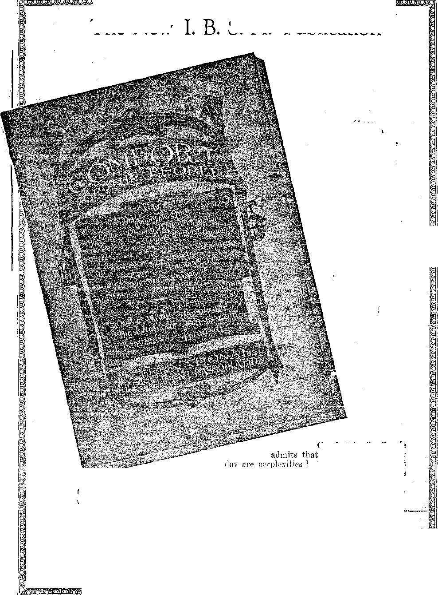

«*» ■■■'■ "■ ~ - 1 ' = ..
Labor and Economics Flotsam and Jetsam
Bisbee, Arizona, Never Recovered
Babies Work New Jersey Farms............
Hard Times in Clothing Industry
Competition Vebsus Cooperation ■ .
Social and Educational The Majesty of the Trees
Oldest and Tallest Living Things ...
Evidences of Humanity’s Degeneracy . . . . . . . . . . • 682
Finance—Commence—Transportation Bankers Report Hungary Sound .............
Canada’s Transportation Problems .....
Peru Has Highest Railway Station
Political—Domestic and Foreign What War Does to a Mob
Bootlegger Tax-Exempt in Ontario .
Science and Invention A Felt-Wire-Cement Wall
New Bombs Will Wipe Out Nine Square Miles .
Lost Use of Left Arm by Vaccination
Religion and Philosophy
The Purgatory Scheme Hopf.i.essi.y Outclassed
Significance of the Recent American Earthquakes
Bible Translations and Interpot.ations
Billy Sunday’s Brand of Religion
A Greenlander’s Reply to a Missionary
Studies in “The Harp of God”........... .
Published every other Wednesday at 18 Coneord Street, Brooklyn, N. Y., U. S. A., by WOODWORTH, HEDGINGS & MARTIN
Copartners and Proprietors Address; 18 Concord Street, Brooklyn, N. Y., V. S. A. CLAYTON J. WOODWORTH . . . Editor ROBERT J. MARTIN . Business Manager WM. F. HUDGINGS . . Sec’y and Treas.
Five Cents a Copt—$1.00 A Yeah Make Remittances to THE GOLDEN AGE Foreign Offices : British ..... 34 Craven Terrace, Lancaster Gate, London W. 2 Canadian ..... e .. . 38-40 Irwin Avenue. Toronto, Ontario Australasian ....... 495 Collins Street, Melbourne. Australia South African .... . . 6 Lelie Street, Cape Town, South Africa
Entered as second-class matter at Brooklyn, N. Y., under the Act of March 3, 1878
Volume VI Brooklyn, N.Y., Wednesday, July 29, 1925 Number 153
INF THE northeastern part of Pennsylvania, in a narrow defile in the mountains, lies a tract of several hundred acres of timber’land which has never been cut over. There are many trees on the tract which are several feet in diameter and of prodigious height, straight as an arrow. The man who owns this tract of timber land is a well-to-do farmer, the owner of a valuable city property, but so much a lover of nature that he goes bareheaded and barefooted most of the year.
He refuses to sell a foot of the immensely valuable timber grooving upon the place, which he inherited from his father; and by way of explanation he said to the Editor; “I do not need to cut any of these trees in order to live, and. I do not purpose to see anybody else do it. These trees make me think of God. When I think of the fact that they have stood here for centuries, lifting their giant heads into the sunlight far above these deep valleys, I feel that it would be wrong for me to take their lives and thus to destroy what I cannot hope to see replaced.”
In America we are suffering from the fact that our immediate ancestors considered the forests their enemies instead of their friends. When they landed on these shores, they found the Atlantic seaboard virtually one vast primeval forest. Before they could till the soil it was necessary to make a “clearing”. Thousands of square miles of land were cleared by cutting the timber, piling it and burning it. There are men still living in Indiana who can remember when lands heavily timbered with black walnut were thus cleared in order to prepare for tillage lands which have since afforded a scant living for their owners. If those owners could have found some way to have retained the lands and let the timber stand, they would today be independently wealthy.
Except in the parks and cemeteries and the remote outskirts there are very few trees in New York city, Philadelphia, Baltimore, Pitts-
burgh, Cleveland, Chicago, St. Louis and San Francisco. But Boston, Hartford, New Haven, Rochester and Los Angeles seem to have given more attention to this subject. In the British Isles, determined effort is made to preserve tree life as much as possible throughout the cities and throughout the country as a whole. A Frenchman, when asked his opinion of New York, made the astonishing but pointed comparison between New York and Paris: “New York has its bath tubs, but we have our boulevards and trees.” The transplanting of mature shade trees in England and France is a common practice, and tends to the constant beautifying of drives and grounds.
Oldest and Tallest Living Things
WHILE it is said that some of the eucalyptus trees in the forests near Sydney and Melbourne, Australia, are the tallest trees in the world, yet the redwood trees of California are very nearly, if not quite, as tall and are unquestionably the oldest living things upon the earth. There are trees in the California redwood region that were nearly a thousand years old before Romulus and Remus had their first meal. They were 500 years old before history had even deigned to notice that there was such a country as Greece. The General Sherman sequoia tree standing in the Sequoia National Park is thirty-seven feet in diameter, and is supposed to have been planted sometime during the life of, Moses. One was recently blown down which had 4,000 rings. This means it was contemporaneous -with Abraham, and had lived during pearly all the period of human history which either the Lord or man has considered worthy of preservation.
It is believed that the only thing that would cause the death of a sequoia tree is to have its root system undermined through the gradual removal of the soil by water. Some of the sequoia trees attain a height of more than 35Q
feet. While this timber is classed as soft timber, it is nevertheless very , strong, and has such fireresisting qualities that fire insurance companies accept it for fire walls. Few woods equal it in durability.
The sequoias have been mercilessly cut to provide homes for California’s population, and stakes for their grape vines; but the genus has been protected against wholesale destruction in middle California by the creation of the Sequoia National Park, containing 237 square miles and haw ng more than one million of these great trees. We read with some surprise, however, that even the greatest of the American sequoias are exceeded in diameter by some of the chestnut trees of Sicily.
It is not always possible to determine the age of human beings, especially the ladies; they have discovered ways and means of covering it up. But with trees it is different. Nature compels them to disclose their age frankly by means of ring-growths, one ring for each year of their life. These rings are caused by the seasons. In Spring and Summer their growth is rapid, but when Winter comes their growth is stunted, resulting in a comparatively hard and somewhat snarly fibrous ring. If a perfectly even temperature should prevail from one year’s end to the other these seasonal ringgrowths would not appear. It is interesting to note, in this connection, that most of the coal deposits, formed of course from the great trees of the carboniferous era long before man inhabited the planet, do not contain these ringgrowths. This is a confirmation of the Valian theory of creation, which holds that the antediluvian earth was blanketed with a canopy which maintained a comparatively even temperature throughout the year. Where ring-growths do appear in certain strata of coal, they are generally irregular throughout, showing that the dwarfing of the growth of these trees at certain periods was due to local conditions of temporary and shifting nature, and not to periodic winters such as now prevail.
WITH the commendable purpose of increasing public interest in trees, the American Forestry Association has been cataloguing the trees, historical and otherwise, which are most worthy of public attention. Many of those which they list are famous landmarks:
The first Bible printed in America was a Bible in an Indian language which no one now living can read, the work of John Eliot, missionary to the Indians in Massachusetts; and the oak tree at South Natick, Mass., under which he preached to the Indians, is still standing.
There are about twenty historical elms in Massachusetts. One of the most famous. of these, the so-called Washington Elm, under which General Washington stood when he took command of the Continental, army, died in the Summer of 1923.
There is still standing on the campus of St. John’s College, Annapolis, Maryland, a tree under which a treaty with the Indians was signed in 1652.
The Daniel Boone Judgment Tree at Defiance, Missouri, under which the famous frontiersman gathered the pioneer settlers to arbitrate their disputes, now measures sixteen feet six inches in circumference; but it is decaying, and may not last long.
It is claimed for the Hooker Oak, at Bidwell Park, Chico, California, that it is the largest oak tree in the world. The Hooker is 101 feet high, has a spread of branches 147 feet, trunk diameter of nine feet, and a circumference of twenty-eight feet two inches.
An elm on the property of Dumont Kennedy, Crawfordsville, Indiana, has a spread of ninety feet. .
Chicago has a giant white maple tree eighty feet high, nine feet in circumference at the base, and estimated to be a thousand years old.
Four other trees of noteworthy size are the old sycamore on the place of James Hill at Wheatley, Long Island; an elm at Huntington, Indiana, with a spread of seventy-five feet; a similar tree at Framingham, Mass.; and the Wye Mills Oak near Easton, Md., which is said to cover an area of eight average trees and to afford shelter beneath its branches for all the people that can be crowded upon an area one-third ofl an acre in extent.
T TITLE in southern Mexico is a cypress tree called “The Ahuehuetl” by the Indians and “Our Lady of Thule” by the Spaniards, which is estimated to be about two thousand years old. Under the tree the Toltec chieftains have held their powwows for centuries.
GOLDEN AGE
There are many oak trees standing in England’s parks which are believed to have been living throughout the whole period of British history..
There is a rose tree in Cologne which has blossomed every year for ten centuries. There are many fir trees in the forests of Wuerzburg which are thought to be over 700 years of age.
In the vicinity of Jerusalem there are olive trees which are credited with being in existence in the time of Christ. In the plain of Mamre, in the place where Abraham built an altar to the Lord (Genesis 13: 8), there is standing a great oak tree venerated alike by Christians, Jews and Mohammedans. The preservation of this tree for centuries, in a region cleared of almost all trees by the improvident Turks, is remarkable,
Napoleon Bonaparte on one occasion altered his plans for a military road in order to save a single notable tree.
Trees do not seem to thrive in the famous Central Park, New York. It is supposed that this is partly due to the poor soil and partly to the auto gases which have made many of the streets of New York intolerable for pedestrians, no less than for the passengers in the autos. The average mortality of the trees in Central Park is 3,500 per year, the average number replanted annually being about 2,500. The law of mortality is especially large among evergreens, due to the fact that the leaves of the evergreens are permanent and that when the breathing pores become choked ‘with soot the tree is stifled from lack of air.
Great cities are abominations and excrescences upon the face of the earth; and we may be sure that when the Lord’s kingdom is established some better way will be found for providing the people with supplies and necessities than by polluting the atmosphere, the trees, the grass, the soil, and the water by gas and soot and by the convergence of millions of people living over one another like bees in a hive.
The New York Times traces the “Christmas” tree back to Norse mythology. The ancient Scandinavian legend is that the first Christmas tree was one that grew from the blood of two lovers foully killed, and that when it had attained maturity lights sprang from it which no wind could extinguish. The Times adds: “To this, perhaps, may be traced the present practice of illuminating the Christmas tree.” Uncle
Sam uses each year 5,000,000 Christmas trees. About the same number is used in the British, Isles, and three-fourths as many in Germany.
HE Bible account of the life-giving trees in the garden of Eden is readily comprehended vdien we look about us today and see some of the benefits which trees confer on man. Hundreds of varieties of fruits and nuts delight the eye and please the palate. Almost every person eats a little of some sort of fruit almost every day of his life.
All have heard of the bread tree. But there is a milk tree, too. We do not refer to cocoanut milk. The milk tree grows in South America. Its sap strongly resembles rich cows’ milk, and the natives enjoy it immensely. Then there is a butter tree in Africa which yields 100 pounds of good butter at a time. After a few months a fresh supply is ready. Wlien hardened and salted, this product is said to taste very much like fresh, sweet butter.
There are certain trees in the tropics which furnish fabrics for clothing. The inner bark of others, just in its natural state, makes good writing-paper. There is an ash in Sicily which manufactures sugar. One of the fir-tree family in British Columbia also yields a rare variety of sugar; and in our own clime we have the sugar maple.
There is a lace tree in the West Indies, the bark of which resembles an exquisite lace, and is wTorn as such by women of good social standing. The seeds of an Arabian tree, when pounded and swallowed, give the user an overdose of laughing gas, and cause him to act ridiculously until the effect has worn off.
In one of the driest of the Canary Islands, there is said to be a rain tree, which collects moisture from the atmosphere so rapidly and sheds it so quickly that a cistern placed beneath it is never empty. Mexico is said to have a similar tree (only one) near Tehuantepec. The Turks make soap and coffee from house chestnuts, besides a household remedy, and also a form of liquor.
From the white birch the Russian people make medicine, liquor, syrup, and vinegar. From its midsummer leaves they make a beautiful yellow dye, and from the autumn leaves a stuffing for pillows and cushions. From its bark they make shoes, spoons, bowls, horns, and canoes.
All the turpentines, rosins, gums, varnishes, and a thousand other necessities of. life, come . from the trees, not to mention the daily paper. An area of trees ten times greater than the combined area of Staten Island and Manhattan Island, New York city, is cut every year to supply the material required for the pulp and paper industry of the United States.
The Black Walnut Passing
f^|NE of the most valuable of American woods is the black walnut, which is now passing away. Experts tell us that at the present rate of cutting, the black walnut will be gone in twenty years. It was once plentiful; and in the days of generous supply it constituted one of the principal woods used in the making of furniture.
The husk of the black walnut contains a dye which, when it gets on the skin, will come off when the skin comes off, but not before. This dye is a base for much tanning material, stains, hs.tr dyes, etc. The shells make good fuel, of which the resultant ash is valuable.
The black walnut was once called the Liberty Tree, because it so well represented the whole country. But now it is rarely to be found. Not only has the fruit of the black walnut generally disappeared from the stock of the nut dealer, but the wood is rarely to be found at the cabinetmakers, where once it held almost the highest place. The thin-bark Persian walnut (miscalled English walnut) has generally taken the place of the much harder-shelled American black walnut in the nut markets of the world.
On the Pacific slopes there are great areas which have been planted with Persian walnuts, the price per acre running $300 to $400. In the year 1924 the crop was all sold within a few hours after it was placed on sale, so great is the demand. No doubt Persian walnuts could be raised in certain parts of the eastern states.
PERHAPS the most famous forest in the world is that of the cedars of Lebanon, from which King Solomon obtained the timber for the construction of the temple. This wood is so durable that timbers which lay buried in the ruins of Assyrian cities for upwards of two thousand years were as good as ever when brought to light. Pliny, the Roman historian, declared that this wood is everlasting. The ' ancients made their idols from it.
The cedars of Lebanon seem to thrive best in their native environment, but they are to be found elsewhere. There is one of them at Flushing, Long Island. It is sixty-five feet high, seventy-five feet spread, with a trunk diameter of five feet at the base. This tree is preserved by means of a special park or arboretum built about it.
The thing which makes the cedars of Lebanon so long-lived is the oil with which they abound. This fragrant oil is thought to have curative properties, and as such was applied to the bodies of those suffering with leprosy. The Romans used the oil for preserving their manuscripts..........
Of the original forest at Lebanon there now remain but 389 trees, only fifteen of which are of large size; but some of these have a girth of forty-two feet and a height of ninety feet, and.....
the limbs of one single specimen are great........
enough to cover four ordinary city lots. Some of these magnificent cedars of Lebanon, old before the opening of the Christian era, were cut during the World War to supply fuel for military locomotives.
Akin to cedar is cypress, of which the Carthaginians and Phoenicians built their ships, on which the Romans engraved their laws, in which the Egyptians encased" their mummies, and of which Noah built the ark. Gopher wood and cypress wood are one and the same thing, in the opinion of commentators. Like the cedars. of .......
Lebanon, cypress is reputed to be everlasting.
Tree Planting - .......
MORE and more attention is being paid to the planting of trees. Several states have Arbor Days, the exact date being fixed by pro-......
clamation of the governor. In hundreds of ..........
schools there are tree-planting associations. In -one year recently, two thousand elm trees were......
planted along the principal highways between.......
Syracuse and Utica, as a memorial to New York.....-
soldiers who died in the World War. .
American seedlings are fast healing the war-scarred areas of Europe. The slopes once gouged by the tide of battle are now covered with blossoming orchards which had their start in American nurseries. Large areas in France, Belgium, Britain and Ireland have been planted with these imported seedlings. -
A tree must be adapted to the climate and to the soil on which it is to be grown. For use under city conditions it must have healthy foliage that withstands dust and smoke, and a root system not easily affected by unusual soil conditions, by restricted feeding areas, or by root pruning when street improvements are made.
Trees that bear showy flowers, fruits, or nuts are not considered desirable for street planting. Just why this is we do not know. It is the custom in Germany to line the roads with fruit trees; but our Department of Agricul ture recommends otherwise. Some trees are objectionable because their roots penetrate sewers; others because they heave up sidewalks. Oaks are considered more generally satisfactory for planting than any other group of trees, followed closely by elms and sycamores.
The American Forestry Association gives the following suggestions for tree planting: Dig a hole eighteen inches or more deep, then fill to the lower root level with a mixture of three-fourths good soil and one-fourth rotted manure. Set the tree so that it stands two inches deeper than it did in the nursery. If the tree is planted in a sidewalk, the opening should be at least six feet square. Keep the top soil pulverized. The tree stake should be. two and one-half inches in diameter and ten feet long, driven two feet into the ground and secured with rubber-covered wire or with canvass. The tree should have a well-developed head, with a strong leader and branches set at wide, not close, angles. Before setting, the tree should be pruned so that the base of the temporary crown will be seven feet above the pavement. The base of the permanent crown should be ten feet. Cut off smooth every broken root. Preserve the fibrous roots. Rich earth should be packed firmly about the roots.
HE time to begin to care for a tree is before it is planted. Trees should be taken out
of their boxes promptly upon arrival from the nursery. The trees should be untied and heeled in. This is done by digging a shallow trench from five to six inches deep, depending upon the size of the trees, and placing the trees therein at an angle of about forty degrees, lean> ing the tops of the trees toward the sun. The trees should be spread rather thinly.
The trees should then be covered with moist earth up to within two or three inches of the top. It is well to heel the plants in a cool and shady spot in moist earth. It is also advisable to water them somewhat, but care should be taken that they are not watered too heavily; for if they are, they may heat. In this way they will keep several days; but it is always best to plant small trees as soon as possible after their arrival.
A tree must be planted in good soil. The tree can survive bad pruning, old age, dust, insects, lack of moisture and cultivation, if it has good soil, but if it does not have proper soil any or all of these causes will kill it. So the first requisite for the tree is proper food, good soil.
And a tree must have water, plenty of it, once a week. During the Spring and Summer, if the weather is dry, each young tree should have five or six pailfuls at a time, once a week. Watering a little each day is injurious. Nature’s way is to give the roots a thorough soaking periodically. After the roots are thoroughly soaked the soil should be broken up to a depth of two or three inches, in order to conserve the moisture, permit aeration and allow the rain to enter. A young tree can be thoroughly cultivated in about five minutes. Cultivation aids the health, benefits the tree, and increases appreciation of it. Trees near radio plants are markedly benefited by the radio waves.
SPHERE is a species of acacia in Nevada which makes preparations to sleep at night.
The leaves shut together at sundown, and the twigs coil up at the end. If the twigs are uncoiled, the tree flutters and moves uneasily and seems to be agitated, at the same time sending out a nauseating odor. It takes an hour or two for the tree to regain its equilibrium.
A story comes from Scotland of the roots of a poplar tree going down under a house and up on the other side, a total distance of ninety feet, and then penetrating the points of a waste pipe until the rootlets completely blocked the pipe. Query: How did the poplar know where to look for the d?ain pipe? James Rodway, the curator of the British Guiana Museum, declares that in British Guiana there are trees which exhibit feeling and taste, and that some of them seem unquestionably to be able to smell water at a distance. Possibly the poplar, famous for choking sewers, has this faculty.
That plants can be acclimated has been proven in Spain. In a certain district where the snow lies on the mountain tops most of the year, the monks have been carrying the growth •of the orange higher and higher every generation, until at last this tree now produces its sweet fruit at the very summit of the mountain where the monastery is located.
One of the curious trees of Java is that which is sometimes called the deadly upas. Whether or not this tree is as deadly to humans who come within the range of its odors as is popularly supposed, is questionable. But it is certain that the natives are afraid of it, and will not rest beneath it or even pass to leeward of it. The sap is poisonous; but the wood is harmless, and is used for furniture.
EAR Belfast, Maine, some fifty years ago, a pine tree was cut down, leaving a stump three feet high and thirty inches in diameter. Some seeds of the birch fell on the top of the stump; and by a strange freak of nature they lived and thrived. Today there is a clump of fine young birch trees growing on that pine stump, supported by twenty-nine roots encircling the stump, varying from one-half to three and one-half inches in thickness.
About three years ago a German engineer named Reimann announced that he had found a satisfactory process for coloring living trees. By the use of aniline dyes, thirty-two different shades are produced, including olive green, apple green, ebony, weathered oak, and salmon pink. Reports say that trees of any degree of hardness will respond to the treatment, and that the tallest of them will be permeated in two days.
The Cambridgeshire Forestry Association, Cambridge, England, is said to believe that by a certain method, not stated in the report, it is possible to grow square trees, producing wood of better quality and in greater quantity. It is admitted that this can be done only in certain kinds of trees susceptible to rapid or forced growth. Lumbermen near Tacoma, upon felling a fir 250 feet tall, found that it had bark twenty-three inches thick. The tree was estimated to be 2,200 years old.
A farmer near Reading, Pa., had grafted a late autumn variety of apple upon a sweet summer apple tree. In the Fall of 1920, while the tree was well filled with ripened apples the other side of it burst into full bloom. Fall blooming of certain fruit trees and bushes sometimes happens, but in such case there is no crop the following year.
N ILLINOIS farmer named Abbott had on his farm about seventy-five acres of barren, sandy soil, entirely devoid of vegetatiori except for one cottonwood tree. That tree gave him an idea. He planted the entire seventy-five acres to cottonwood, walnut, and locust. Today he has a fine stand of young trees that is causing his farm to increase in value every year.
Harvard University is favored with the ownership of what is called the Arnold Arboretum. This is a farm of 240 acres of hill, valley and meadow in which the students of Harvard may study forestry and botany. In the arboretum are planted trees from every country. The arboretum contains 700 distinct species of the hawthorn, previously supposed to be limited tc> sixteen varieties.
Trees have played their part in love and war. The hanging gardens of Babylon, built by a king to please his queen, is a case in point. A somewhat similar story comes from China where the Great Khan built a hill park for his favorite wife, homesick for mountain scenery. In building this park, the Khan used elephants to carry great trees from their old haunts to the new location. The modern moving of large trees is a business in itself. The famous Duke’s Park, at Somerville, N. J., contains various artifically constructed hills, on top of which have been planted many large trees, moved there in their natural state, by the ingenuity of man and the wealth of a great tobacco magnate.
We conclude with a poem from the pen of Joyce Kilmer:
I think that a shall never see
A poem as lovely as a tree: A tree whose hungry mouth is pressed Against the earth’s sweet flowing bl«ast: A tree that looks at God all day And lifts her leafy arms to pray: A tree that may in Summer wear A nest of robins in her hair: Upon whose bosom snow has lain, Who intimately lives with rain.
Poems are made by fools like me; But only God can make a tree.
[Radiocast, with other items, from Watchtower WBBR on a wave length of 272.6 meters, by the Editor]
BISBEE, Arizona, has never recovered from her foolishness in loading all the union men of the town on a freight train and dropping them out on the desert of New Mexico. It all looked like a bright thing at the time, but labor has dodged the town ever since and. it has so filled up with cheap Mexican labor as practi-ally to ruin it for business purposes.
COLUMBIA. University has recently tested a new form of wall, for partitions. It is four and one-half inches thick, made of felt-wire reinforcement, and cement mortar shot into place instead of laid up or poured. The appearance is that of any highly finished wall, the cost is said to be less, as one coat of plaster is saved, and the strength is doubled. The walls are hollow. .
Mr. Bernays Johnson, a radio engineer and inventor, whose home is in the United States, but who is now in France purchasing chemicals for use in connection with his invention, is said to have announced that by a new process it wall not be necessary to bring the electric "wires further than the entrance to any building, the actual illumination taking place by radio, with the lamps capable of being illuminated anywhere within the building. suspension of licenses is being worked out which' it is believed will be one of the greatest deterrents to reckless driving. On the large margins of London drivers’ licenses the police note every infraction of rules; and when the license gets well marked up it is revoked and. the driver is out of a job.
Fishing with a Ferryboat
FISHING with a ferryboat off Staten Island, in New York bay, is a new sport. So far as we know it never worked but once; but it did work the other day when one of the little private ferry boats hit a 400 pound sturgeon, which was later captured and dispatched. This is the largest sturgeon caught in New York waters in a quarter of a century. The fish, sold for $21,8.
I
Street and Highway Safety '
THE Committee on Enforcement of the Na- ■ tional. Conference on Street and Highway
Safety has had its first meeting. Judge McAdoo, the chairman, proposes jail sentences for intoxicated drivers, with severe fines for reckless driving or leaving the scene of an accident without identification. A plan for revocation or
' 681
WHAT war does to a mob was illustrated in the battle which took place recently in New Waterford, Nova Scotia. Eight hundred miners had been on strike for five months. An attempt was made to reopen the mines with non-union help; fifty policemen protected them. The eight hundred miners, all trained in the World War, marched on the mines, and in a trice captured everything in sight. The police were wounded and either put to flight or thrown into jail. Since then company stores containing goods to the value of $250,000 have been entirely cleaned out.. Troops have been dispatched from Halifax and Toronto.
A T CAMP DIX, New Jersey, four tanks of the First Tank Company were engaged in manoeuvres practising with machine guns, with the result that Mrs. Archie Sprague, mother of six children, was shot and killed while walking in her own yard. And this is in a time of peace.
Mayor Hylan was born on a farm and came to New York with $1.50 in his pocket. His first job was laying rails in the Brooklyn elevated ; subsequently he became a fireman on the same system. Against tremendous pressure he has succeeded in keeping subway fares down to a nickel. He is popularly considered the best mayor New York ever had.
TpOLLOWING the excellent custom set in several cities of letting the boys serve for one day each year as Mayor, Chief of Police, and in other important executive positions, Nyack, New York, has given the girls a chance. For a whole week the girls managed banks, trust companies, the hospital, public library and other' institutions of the city.
TAISPATCHES from Boston state that Rum A-J Row, driven from the vicinity of New York, is now stationed twenty-two miles off shore from Boston and that three destroyers and a seaplane have been requisitioned to encourage the Row to keep on moving.
Bad Liquor Causes Insanity
A NY intoxicated man is temporarily insane, there comes a time, with certain types of minds, when the temporary insanity becomes permanent. The worse the liquor the greater the danger of permanency. Since prohibition went into effect the number of cases of alcoholic insanity in New York state has increased over threefold, numbering from 122 to 375 cases last year.
Elizabeth City’s War Monument
FOR ages monuments have been erected to war heroes. The martial figure, weapons in hand, is to be seen in every large community. Elizabeth City, North Carolina, proposed a monument to the first boy from that section who fell in the World War; and the veterans in that community have startled everybody by asking that the monument take the form of a grim skeleton, pointing out to future generations the horrors and folly of armed conflict between men. Lions will not kill lions; tigers will not kill tigers; hyenas will not kill hyenas. So why should men kill men’
Mayor Hylax, of New York, never forgets that he was one of the common people, and hence takes a most sympathetic interest in the boys and girls who live in the homes where the heat is felt the most on account of overcrowding. lie has given orders that the street showers are to play all summer and that the police are not to interfere when in the hottest weather the boys take dips in the pools and fountains in the parks.
Heat Causes Disappearances
IN THE early part of June the weather in New York city was extremely hot, with the odd result that on June 11th the greatest number of disappearances was recorded of any one day in the history of the Bureau of Missing Persons, sixty-three persons, all told. Twenty of these were found dead with the heat; twenty-three were boys and girls under sixteen years of age. The second week of July bore similar fruit.
Evidences of Humanity’s Degeneracy
np WO boys, one six and one eight years of age, threw a nineteen months old baby into a Massachusetts stream, drowned it, and then threw stones at its little body when it came to the surface. A gang of boys eight to fourteen years of age in Wichita, Kansas, was found to be a well-organized burglary company. A six foot World War veteran, in Los Angeles, went to the police and asked to be locked up because of the overmastering desire to kill, which had been trained into him during the war. He did not hate anybody; he merely wanted to wound, maim and slay for the thrill of it, and to see human blood flow as it did during the great conflict. ,
"D ROOK, Indiana, a town of 1200 people, was ■*-* visited early one morning recently by ten men who cut all telephone and telegraph wires, smashed the doors of the Brook State Bank, opened the bank vault with a blast of nitroglycerine that shook the whole town, cleaned out its contents and then escaped. What is this but a new form of war'?
FTTHE New York American says that there are already in existence gas bombs of a type such as when manufactured in large size for carrying by one of the new weight lifting planes, and dropped in the heart of any big city, would liberate an amount of low-lying poison gas sufficient to cause death over an area of nine square miles.
WEEHAWKEN’S alleged bootleg ring is up for another trial. The members of the ring were Weehawken’s police force; the captain of the ring was the Commissioner of Police. Nine of the twelve defendants are members of St. Lawrence’s Roman Catholic Church of Weehawken, N. J. Father Bennett, rector of the church, is a star witness for the state, but has asked his congregation to pray for acquittal of the men. Judge Charles Egan presides at the trial.
• The Fatal Mule Kick
IN THE year 1923 in the coal mines of the
United States ten men lost their lives as a result of kicks by mules; many more were seriously injured by the same means. There are five thousand coal mines in the United States in which mules are used for bringing the coal to the surface. These mines comprise about
seventy percent of the coal tonnage of country.
■ Lost Use of Left Arm By Vaccination
Alexander Karely, formerly aviator in French army, and now resident in
the
the the
United States, has just been awarded $10,000 damages in the Superior Court of White Plains, N. Y., in an action against the Cunard Line. Karely alleged that he had lost the use of his left arm through vaccination enforced upon him by physicians of the shipping company before he rvas permitted to sail from Cherbourg in 1920.
Peculiar Tragedy in Mexico
MEXICO has been the scene of an unusually distressing tragedy. Bandits had been ravaging the neighborhood of Chilmatlan. An armed band of farmers went out to look for them; at about the same time a band of soldiers was also sent out on the same errand. The two bands, each mistaking the other for the bandits, opened fire on each other; and after a two-hour battle seventeen were killed, while the bandits escaped uninjured.
Radio Aid to Explorers '
Captain A. AV. Stevens, United States army air service photographer, connected with the Hamilton Rice expedition in South America, has returned to America after nine months service with the expedition. He reports that at all times the expedition was in contact by radio with New York, San Francisco, New Zealand and London.
Gives Eleven Gallons of Blood
Mr. B. AV. Tibble, of London, England, has on forty-five different occasions given a ■ pint of blood, for transfusion to patients in the London Hospital. The usual fee is five guineas, twenty-five dollars, but Tibble has always refused to receive any pay for his services. He ‘ has been made a life governor of the hospital and been honored with an Order by the king.
Banker Reports Hungary Sound
Tj ARON ; Jules de Madarassy-Beck, one of
Hungary's bankers and industrial leaders, on a three weeks visit to the United States, declares that Hungary is now in a better position than at any time' since the war. He claims that Hungary has only 30,000 men in the army, has no thoughts of war, and no desire for or interest in communism. -
Serious Earthquake in China ■
TpIVE thousand persons lost their lives when the almost' inaccessible city of Talifu, China, was destroyed by an earthquake early this Spring. It took many weeks for news of the disaster to reach Peking. Flames followed the earthquake, and only a few houses in the city escaped destruction. Hundreds were entrapped by the flames. .
Babies Work New Jersey Farms ■
NEW JERSEY’S State Director of Employment, on a tour of the truck farms of southern New Jersey, begun on May 20th, reported that on the farms which he visited ten percent of the children working in the fields were under ten years of age. The New Jersey law requires that until sixteen years old these children should be in school. It is alleged that the little folks are brought into New Jersey by padrones who have their headquarters in Philadelphia.
Hard Times in Clothing Industry
THE cloak, suit and skirt industry of New York has been having hard going of late.
Times are not so good, and people are wearing their old things rather than buying new. As a result the unemployment insurance fund of the workers is now being drawn upon to prevent total loss of income. The fund provides $10 a week for not more than twelve weeks in a year, and is made up during busy periods, one-third by workers and two-thirds by employers. .
Easton Trousers Last 41 Years
AMAN in Washington, N. J., now 74 years of age, boasts that when he was a young man of 33 years of age he bought a pair of trousers in Easton, Pa., and has used them for his best trousers regularly every Sunday from that time to this. The next time you want anything good go to Easton for it. ■
Alberta has added a new crop to her list, that of raising sunflowers for silage. Last year she raised 160,650 tons for cattle feeding, and the Alberta dairy industry is coming to be of great importance. England offers to buy all her surplus butter for a long time to come.
THE New York Times contains reports of a diamond merchant slain by his private secretary while in the air, in Austria. The body was thrown overboard and subsequently the airplane was destroyed. The secretary is said to have escaped with the diamonds, valued at 2,000,000 francs, and is believed to have slain the pilot also to avoid sharing the proceeds of the robbery.
THE Proctor and Gamble Company, manufacturers of Ivory Soap, have just distinguished themselves by buying a shipload of whale oil, 19,000 barrels, recently brought into New York by a Norwegian ship that caught and killed three hundred whales in the Antarctic during the past eight and one-half months. After a visit to Norway the ship will go back for more soap.
Peter Butko, a Czecho-Slovakian, landed penniless in Philadelphia two years ago, not able to speak English. This Spring he was graduated with honors from Pennsylvania State College, receiving the degree of Master of Science in Animal Husbandry. This was accomplished by sheer industry and self-sacrifice. In this time Butko has averaged less than three hours sleep a night. He was a graduate of an agricultural college in Czecho-Slovakia.
Under the heading “Consequences of the Wai to end Wars” the Saskatoon Western Producer comments on the invention by Sir Robert Hadfield of Sheffield, England, of a new 16-ineh shell which will crash its way through the thickest and toughest armor plate yet applied to battleships and thereafter explode its hundreds of pounds of high explosive bursting charge. Now all that is needed is a war in which to try it out. No doubt the munition makers will arrange that little detail.
Raising Potatoes and Selling Them
IT IS one thing to raise potatoes and another thing to sell them. In the Red River Valley of Minnesota, in 1923 the farmers received thirty-five cents a hundred pounds for potatoes. It was found that these potatoes were sold in Salina, Kansas; and some interesting things were discovered.
The freight from where the potatoes were raised to Salina was fifty-five cents a hundred. The farmer got thirty-five cents, the railroads fifty-five cents. Out of the thirty-five cents the farmer paid his taxes and his help, and supported his family. Out of the fifty-five cents the railroads had to pay wages, carrying charges and profits. The totals paid to the farmer and the railroads were ninety cents.
But the potatoes actually sold at wholesale in Salina for $1.50, and the retail price was still higher. In other words the wholesalers took a profit of 60 cents per bushel, which was almost twice what the farmer received. No fair-minded person can believe that there is anything fair in such a division.
The Purgatory Scheme Hopelessly Outclassed
A CANVASSER recently learned of a unique method for ushering one into the heavenly host, as developed by the pastor of a church in a Colorado town.
A prominent townsman, who could not be persuaded to make any pretense of religion, 'died recently “without benefit of clergy”. On the Sunday following, this pastor put to a vote of his congregation a proposition to elect the By F. M. Robinson deceased a member of the church, which proposal carried.
Feeling possibly that this vote was not sufficiently authoritative, the pastor put the same proposal to a vote of the audience at the funeral, and it again carried. .
Thus the man was catapulted into eternal bliss, regardless of his personal wishes. This is a long step forward from praying one out of purgatory, and is much cheaper.
Transportation problems, both on sea and. land, are receiving much attention at the present time, the Petersen subsidy and Crow’s Nest Rate agreement taking up time in the Ottawa legislature, and the tentative proposals for C. P. R. and C. N. R. cooperation taking up the time and attention of the directorates of these two Canadian roads.
The latter is a proposition which, with proper development might do much to help the shipper. Amalgamation of the two roads is urged in some quarters, and some interesting figures are produced to show great potential savings. In the legislature, for instance, the Saskatoon Western Producer, reports:
“Mr. Euler again endorsed Mr. MacLean’s scheme for the amalgamation of the Canadian National and Canadian Pacific Railways. He urged that this would enable the Government to reduce taxation by nearly one-third, that it would stimulate trade and lower the cost of living and at once solve our ocean freight rate problem and, greatest of all, that it would lead to the extinction of our enormous public debt. Some figures are worth reporting. The investment in road and equipment of the Canadian National is about $1,837,000,000, the total assets about $2,074,000,000, loans from the Government amount to $560,397,957.64. The intereston these loans amounted last year to $31,000,000; the debt to the public of Canada, not the Government but outside bond-holders, is $913,9'13,082.80, involving fixed charges of interest of $38,361,704.14. That is a total, in round numbers, of fixed charges on the Canadian National Railway of $69,000,000., Deducting the operating revenue of $17,000,000, we have a net deficit of $52,000,000. .
“Mr. Euler showed the duplication and competition that existed between the Canadian National and the Canadian Pacific, and stated that he had it on the highest possible authority that if the two roads could be amalgamated there would be saved the colossal sum of $100,000,000 a year.”
On the contrary, Mr. E. W. Beatty, President of the Canadian Pacific Railway, does not see such great savings. As reported, in. the Moose Jaw Evening Times:
“A dressing the shareholders of the Canadian Pacific Railway at the annual meeting here this afternoon, E.W. Beatty, President of the Company, declared that although the Canadian Pacific was in favor of a cooperative policy which would eliminate as far as possible duplicate train services on the lines of that railway system, and of the Canadian National Railways, such a policy was not sufficient to constitute a solution of Canada’s railway difficulties.
, “This, he said, was the only proposal that had. been discussed between the Canadian Pacific and the Domin-< ion Government, and no situation had arisen which should give the shareholders of the company any reason To believe that their interests would be adversely affected in finding a solution to Canada’s problems as regards the Canadian National Railways’.”
That even a more efficient operation of the Canadian National Railway has not produced a solution of the problems of railway management by Government ownership is shown in the following culled from the Montreal Weekly Star:
“How many Canadians try to realize what is implied in the statement made a few days ago by the Minister of Railways, that the railway debt of the Dominion had increased by $116,292,696 in 1923, by $59,621,818 in 1922 and by $133,192,254 in 1921?
“Year after year we are assured in Parliament that operating expenses are reduced or that profit has been earned by railway operations; and yet all the time, by bond issues to cover deficiencies, our debt is increasing to mountainous proportions!
“Budget speeches tell us absolutely nothing of the true financial position of the country, but are evidently framed for effect upon the destiny of the political party in power at the moment.
“Of course the enormous interest charges upon these bonds have to be met. It would be bad enough if we had to pay them out of the taxes. But the misery of it all is that we axe not meeting these interest charges out of the country’s revenue, but by issuing further bonds adding to our interest-bearing debts! What mercantile concern could go on doing business that way ? Last year’s interest charges came to over $65,000,000. That, presumably, or the greater part of it, will also be added to our funded debt!
“Yet there are those who pretend that the country is prospering, and doing so well that it can afford to run into further indebtedness. The undoubted fact is that at present our richly endowed though sparsely settled country is not paying its way, in spite of the taxation which is crippling trade and of the money spent outside in luxuries.
“We are running deeper and deeper into debt and our politicians with their party cries are so beclouding the issue that the bulk of our population is asleep to the fact.
“WJiat, one wonders, will be the effect of an awakening? Or which way shall we turn when settling time comes, and our credit can be extended no further? That time must come, sooner or later!”
The Hamilton Herald reports the frantic police investigation into the recent burglary of the Duro Manufacturing Company of that city, when desks were systematically ransacked and $1.50 in cash and a number of metal slugs were
stolen. A police detective, after following up certain clues that might have evaded the eagle eye of Sherlock Holmes himself, trailed the bold bad burglar to his lair and caught him red-handed in his mother’s kitchen! He was six years old. Later a five-year-old was picked up and held as a “vag’” after five days absence from home. The police inspector sees dark days ahead for the “forces”. “Pretty soon they will toddle into police court and put their baby milk bottles on the table as they plead to arson, dynamiting and murder. We’ll have to have a nurse as well as a matron,” he added in despair.
Canada’s northern garden of Eden is to be explored. In northwest British Columbia a subtropical region of valleys has been found which the discoverer says is always warm, watered by rivers of warm water and producing immense ferns, rosebushes as thick as a man’s wrist and of great height, willow trees three feet thick. Animals are fat and tame and increase enormously, owing to the all year round warm climate and lush growth of grasses on which they feed. The Vancouver Daily Province, reports that the discoverer of the region, Mr. George Perry, and Mr. George Platzer, who is financing the expedition, are leaving Vancouver by airplane to examine the ground thoroughly.
The Vancouver Morning Su-n, under the title “America’s Food Drunks”, editorially quotes the famous American, Chauncey Depew, on the subject of eating:
“Drinking was never really the curse of America. Eating was and is. Ninety-nine out of every hundred Americans go to the cemetery from twenty-five to fifty years before their allotted time because of gluttonous eating. Longevity is largely a matter of curbing appetites until temperance and moderation become habits.”
The Sun’s editor then comments:
“Millions of people on this continent are food drunk. They have gorged themselves until their insides are producing chemicals infinitely more poisonous than pure grain alcohol. Chauncey Depew is not a theorist; for sixty years he was a glutton himself. Then he realized that if he wanted to live longer he would have to eat sensibly, and that idea has worked for thirty-one years. Today he says he enjoys life to the full.”
Not in decades has there been such a concentration of public opinion on the need for more sensible eating habits, and slowly but surely the people are learning the value of foodstuffs.
A peculiar situation has developed in Ontario over a notorious bootlegger, Cecil R. Smith, engaged in the illicit booze-running business to United States points, who has resisted an assessment of his $100,000 income for tax purposes on the grounds that as his business is not recognized as legal it is not assessable for taxartion.
In the Exchequer Court his defense was rejected ; but in the Supreme Court, to which he appealed, his defense was sustained. Mr. Justice Mignault rendered a considered judgment which shows the devious reasoning of the legal mind as against the judgment of honest common sense. As reported in the Toronto Sentinel, he said:
“If the gains derived from crime are within the contemplation of the statute, then the expense incurred in making the gains, that is in the employment of criminal a*ents, would be chargeable as reductions against them, and as to all information furnished by the wrongdoer, there would be a promise of secrecy for his protection.”
“Truly,” comments the Sentinel, “in Canada the wicked flourish like the green bay tree.”
When “justice is laid to the line and righteousness to the plummet” the legal aspect of things will have its corkscrew twists straightened out and pure justice will replace the application of law.
The coal war in Nova Scotia is still on. A dispatch from Sydney, N. S., intimates that three hundred mines are now closed down, 70,-000 men idle and more mines closing all the time. The war entered its second stage recently when picketing was commenced, and officials driven from pump houses, pumps and fans shut down and mines allowed to fill with water and gas.
For this fifteen ringleaders were arrested and lodged in jail. The next logical move will be acts of actual sabotage, probably (as has been proven in many similar cases) done by thugs hired by the Coal Companies and charged to the strikers, the calling in of militia to defend property, the militia fired on by other hired thugs, and a state of martial law declared. Then comes the last act of the tragedy, wholesale arrests, shutting down of all relief, starvation of the intimidated workers, eviction of the people, employment of alien labor and forcible smashing- of the strike.
Significance of the Recent American Earthquakes
NEW YORK’S great skyscrapers were , swayed, and the city’s congested population was much alarmed when on the last day of February the northeastern corner of the United States, covering a territory of 1,000 miles, including Washington, D. C., was visited with earth tremors said to have been the most severe in the memory of Easterners. The tremors began at 9:21 p. m., and continued until 10:30. The center of disturbance was about 500 miles from the Federal City. Northern Maine experienced the most severe shock. The quake was felt at Dayton, Detroit' and Chicago, and as far north as Montreal. No casualties were reported, but electric lights and means of communication suffered.
In Washington, the District Building and many other downtown structures were shaken slightly, but escaped serious injury; but in nearby sections the quake was sufficiently violent to rock chairs and disturb pictures on the walls of residences. At Georgetown University, Washington, D. C., the experts declared that the seismograph had recorded only one shock of equal severity in the past, the needle being completely thrown off the scale,sheet twice during the registration. The other similar occurrence was several years ago, during the great earthquake in Turkestan. The machine recorded "violent vertical actions”, and the registrations were in an “East-to-West” component. The seismograph in Washington is the most sensitive of its kind in the world.
In New York city, where the skyscrapers swayed perceptibly, the quakes were so apparent that they were misunderstood as terrific explosions. Two distinct tremors were felt. The first lasted five seconds. It seemed that the buildings gently swayed back and forth. A moment later came a second quake, shorter in duration. The seismograph in New York’s Museum of Natural History literally danced.
In Montreal, hundreds fled from their homes, telephone exchanges were put out of commission, and pleasure-seekers in dance halls and cabarets were panic-stricken when the walls -trembled and floors shook. At Vassar College, Poughkeepsie, N. Y., a panic was narrowly averted in the crowded auditorium. In Cleveland, buildings rocked and tenants fled into the streets. Residents of Buffalo, Philadelphia and Boston noticed the tremors, which were less
By J. L. Bolling
severe than in New York city and Cleveland. Mount Vernon and Haverstraw, N. Y., "waved gently as in a breeze.” Other small towns reported tremors. Filaments of light-bulbs in many homes were broken.
Broadcasting stations in the East were overwhelmed with requests for announcements on the air regarding the quake. Police were called out to quiet the Italian section of Jersey City. Over 2000 people rushed from a theatre in Bloomfield, N. J., thinking that it was another munitions explosion. A large theatre in Syracuse, N. Y., was emptied, the quake there being quite severe; andheroic measures were necessary to quell the fears of the crowd. Rochester, N. Y., was shaken, and buildings rocked in the nearby town of Irondequoit. Tall buildings in. Canton, Ohio, trembled, and night workers rushed into the streets in fear. Pittsburgh was alarmed in like manner. The telephone exchange building at Titusville, Pa., was hurriedly vacated, and communication with Jamestown, N. Y. was severed. Guests in the upper stories of hotels in Atlantic City were frightened. Reading, Pa., was shaken. In Detroit, in police headquarters, the clocks stopped. South Bend, Ind., felt the earth tremor, and there was much alarm in the business section.
Some authorities believe that this quake was actually a gigantic "slip” in the ocean bed, about 500 miles off the North American coast; for the more violent shocks were felt in the extreme northeastern part of the United States, along the Atlantic coastline.
Symbolic Earthquake Imminent
IT IS a very significant fact, overlooked by the press, that this earthquake affected only the area embraced by the recent eclipse of the sun. This may be taken as symbolic of two things: First, the darkening of the sun immediately prior to the shaking of the physical earth aptly illustrates and calls attention to the fact that the American nation collectively is in the dark concerning the meaning of the signs of the times,, that it is groping in darkness brought on by the beclouding of the sunlight of Gospel truth by so-called higher critics. The darkness of infidelity has invaded the minds of the people, blinding them, to the glorious things in store for them.
Second, the quaking of the earth signifies that
'AmRrican institutions, manned for the most part by those who have accepted the evolutionary teachings, and who have ceased to trust in God or look for His guidance, are about to be overthrown in the coming “earthquake” or social revolution predicted in Scripture. The greatest contributing cause of its overthrow will be loss of faith in God, selfishness, egotism and pride. ‘Everything ■will be shaken which can be shaken’ is the substance of the Scriptural warning in this connection. ,
“And there was a great earthquake, such as was not since men were upon the earth, so mighty an earthquake, and so great.” (Revelation 16:18) The earth is getting ready for a great symbolic earthquake, a quake which will shake society to the foundations. This may be preceded by a universal earthquake, literal in character. It is to be remembered that symbolical scriptures often have a literal fulfilment also.
The quake above recorded was probably a culmination of numerous slight seismic disturbances which have been noted in press dispatches at frequent intervals ever since the Japanese catastrophe of 1923. Yet, in a relative sense, they constitute but the premonitory click of the divinely-provided alarm clock, apprizing earth’s inhabitants of an unparalleled disturbance about to take place in the earth’s crust, which will further prepare the planet for man’s eternal abode.
We are entering a great and wonderful epoch in earth’s history, and spectacular changes will accompany the ushering in of Messiah’s kingdom, the Golden Age. Many of these changes will, of necessity, be physical; others will result in great upheavels in human society; but both are often described under one and the same symbol. It is so in this case; a great social revolution is imminent, which is the harbinger of God’s kingdom. It can be seen rapidly shaping and assuming form in the murk.
The hitherto dim outlines of that “time of trouble such as was not since there was a nation”, have grown more and more distinct with the passing days and months and years, since the winds of strife began their deadly work in 1914. And with the coming of this great social upheaval we may logically look for and expect the physical earth also to “reel to and fro like a drunkard”, awakening all mankind and informing them in no uncertain tones that a great change is imminent in human affairs and that the planet, long the abode of wicked men and evil spirits, is about to come under the control of Him “whose right it is”—our Lord Jesus.
The world is still asleep. It is yet in the dark regarding the true meaning of the signs of the times. It knows not of the presence of Christ in the earth at this time, and with it “all things continue as they were from the beginning of the creation”. This is especially true of the leaders. They are benefited by the present order of things and do not desire a change. They wish to keep the masses under their control, and to retain their influence over them. This class is the antitype of the Jewish Pharisees and, like them, have surrendered to the devil, obey his commands and execute his will, while pretending to be believers in God and servants of the people, whom they are exploiting and gradually, but surely, bringing into slavery.
There is an organized, intelligent effort now under way to reduce the American people to serfdom. It is the same in other countries. The ruling factors regard the earth as you would an orange—something to squeeze the juice out of. But a mighty change is impending. Do we need proof that the Millennium is dawning? "Why, the facts are on every hand!
Since 1874 the earth has become crowded with miracles and wonders; they are everywhere to be seen—great railway systems, horseless vehicles, and ocean liners which are literally floating palaces; aerial navigation, telephone, radio, and wireless photography; miracles in chemistry and in physics, all within the limits of this generation. And still they continue to accumulate, falling all around us like gentle snowflakes, for the blessing of mankind. Mountains of books, an ocean of literature, thousands of colleges and other institutions of learning, mankind literally running to and fro! The world is on wheels. Air navigation is now being commercialized; trains will become obsolete, and the earth will become a whispering gallery. And yet the world is dumb and refuses to believe that these things, foretold in prophecy, mark “the time of the end”.—Daniel 12.
The stupidity of the present generation will be a subject of comment and criticism a hundred years hence. The resurrected millions will look back to this time, and wonder that both leaders and people were so utterly blind to the significance of present-day events. And then they will know, and the present living nations will know, that we of this time were given the most tremendous shaking of the physical earth, as well as a mighty symbolic upheaval to awaken us to a realization of the facts, and to prepare all mankind for the New Order. It is coming. It is near. The time draweth on when “the cities of the nations” will fall, literally, actually fall; and “Great Babylon” will suddenly ‘come in remembrance before God’, that Mighty Monarch who will give unto her the cup of the wine of the fierceness of his wrath! After this the nations will become cairn, humbled in the dust, and willing to accept God’s help in their unparalleled difficulties.
The 46th Psalm is very comforting and assuring to God’s people, in view of these expectations: “God is our refuge and strength, a very present help in trouble.” We are therefore bidden not to fear, even though “the earth be. removed, and though the mountains be carried into the midst of the sea”. The river of truth will gladden our hearts, regardless of what happens; and we can have great confidence in God, who is all-powerful, full of love, kindness and mercy; yea, “His tender mercies are over all his works.” Following the shaking of the earth, literal and figurative, God will ‘make wars to cease’. The desire of all nations for peace and happiness and life everlasting will come, and the earth shall be filled with God’s glory. “O clap your hands, all ye people; shout unto God with the voice of triumph. For the Lord most high ... is a great King over all the earth 1”—Psalm 47:1,2; Haggai 2: 7.
Earthquake Precedes Revolutions
IT IS a noteworthy fact that in 1755, about one decade before the American Revolution, and thirty-four years prior to the French Revolution, under the opening of the sixth seal of Revelation, there was a great earthquake, which particularly affected Lisbon, Portugal, covering 4,000,000 square miles (6,500,000 square kilometers). Lisbon was almost totally destroyed. Its population at the time of the earthquake was 150,000; and according to the “Encyclopedia Britannica”, 90,000 persons perished on that occasion.
“The shock of the earthquake,” wrote an eyewitness, “was instantly followed by the fall of every church and convent, almost all the large public buildings, and onefourth of the houses. In about two hours afterwards, fires broke out in different quarters, and raged with such violence for the space of nearly three days that the citj| was completely desolated. The earthquake happened on a holy day, when the churches and convents were full of people, very few of whom escaped. The terror of the people was beyond description. Nobody wept; the trouble was beyond tears. They ran hither and thither, delirious with horror and astonishment, beating their faces and breasts, crying, ‘Miscricordia! the world’s at an end!’ Mothers forgot their children, and ran about loaded down with crucifixed images. Unfortunately, many ran to the churches for protection; but in vain. People, priests, altars, and images were all buried in one common ruin. Ninety thousand persons are supposed to have been lost on that fatal day.”
A great tidal wave added to the horror of the Lisbon earthquake, and the shock was so severe at sea that sailors were thrown to the decks. Mountains were split wide open, from top to bottom. It is said to have been the most severe earthquake shock ever felt on this earth. Symbolically, the French Revolution is in the same category. Nothing like it had ever before occurred ; and if God saw fit to permit an unprecedented literal quaking of the earth before the French Revolution, with much more reason may we expect a similar occurrence preceding the impending upheaval in human society; for it will far eclipse all previous revolutions and will never have a parallel.
Santa Barbara Quake
HE severe earthquake shocks which wrecked the beautiful city of Santa Barbara, Calif., on June 29 were not unexpected among seismological experts. There have been repeated tremors in that region since the San Francisco quake of 1906, but particularly during the past seven years at San Jacinto, Inglewood, Elinore and San Bernardino. The system of earthquake faults outlines the San Gabriel range and extends west through the Santa Paula Valley. The Gaviota Peak has moved northward 24 feet in the past thirty years. The general movement of the earth’s surface during the recent quake was from south to north, amounting to 16 inches at Santa Barbara. The last great quake there was in 1857. Geologists believe that the rocks have now returned to their normal condition of elastic strain and that there is no immediate danger of further severe shocks in that region. The Santa Barbara quake caused much loss and much suffering, but it did not cover a wide area and was actually less destructive than some seismologists had feared it might be.
COMPETITION, the system of aristocracy, contradictions, confusion, selfishness and death, is today arrayed in the last great struggle of the age against Cooperation, which is the system of brotherhood, oneness, adhesion, love and life.
Any government of people which practises competition is of necessity an aristocracy. It may clothe itself with another name, such as “'republic”, but the competitive system fastened upon it leads to the creation of an aristocracy— an imperial aristocracy.
In the so-called republics of today there are the money lords—the coal, steel, sugar barons, etc.; while we see, in the nascent stage, the water and air barons. The competitive system is a psychological seesaw. The horse may be likened to doctrines, principles or fundamentals of the system; while the board and its riders may be likened to society.
In the center of the board is a standing giant. This is Satan’s trinity number two—Big Business, Big Politics and Big Church. One end of the board chn go up only as the other goes down. In between the two ends of society, the crafty manipulators sway the cause and effect of industry and finance. Likewise, this trinitarian monster hides Mr. Parasite from Mr. Producer and prevents him from seeing the great fact proclaimed by honest, faithful Peter: “Stand up. I myself also am a man.” While the Bible plainly shows the competitive system to be of Satanic origin, materialists, aristocrats and parasites hail it as Christ’s kingdom on earth— Christendom. They conveniently overlook His plain words on the subject: “My kingdom is not of this world.” .
One of the Interest enemies of cooperation, brotherhood, socialism (the word socialism is derived from the Latin word, socius, meaning a comrade— brother), was Friedrich Nietzsche. He, the world’s haughtiest aristocrat, champion of higher criticism., the survival of the fittest (?), advocate of superman and hater of pity, studied to become a parson and died a madman. His father, grandfather, great grandfather were all parsons. Undoubtedly the writings of this madman, son of parsons, was partially responsible in bringing on the Great War. A very significant thing about his writings is that there is scarcely a statement in it that he does not himself contradict.
True to the competitive system for which he fought, he was full of contradictions and complexities. The contradictions of self and system are equaled only by those of Beelzebub—god of the fly. This parson, son of a line of parsons, while advocating extinction of the weak and the lovers of pity, irreverently said of St. Paul: “Paul, the appalling imposter, pandered to the instincts of Chandala morality in those paltry, people when he said, “Not many noble are called,’ etc. (1 Corinthians 1:26 plus), when he himself was a physical weakling and Averse ■—a madman and son of a madman.”
And this was the world’s foremost advocate of competition, and hater of cooperation; the world’s foremost advocate of superman, and hater of the weak; the world’s foremost advocate of aristocracy, and hater of socialism. Fie has sung his song of competition, hate and death, and the aristocratic world applauds; while another has sung the song of cooperation, love and life, and the aristocratic world hears it not, thought the “common people” are beginning to hear it gladly. .
“War,” said this apostle of competition, “is a biological necessity, an indispensable regulator in the life of mankind, failing which would result a course of evolution deleterious to the species and, too, utterly antagonistic to culture.”
And what was the end of this haughty aristocrat'? In the early part of 1889 he went mad. He marched about with a banner and proudly proclaimed himself to be God, saying to curious listeners: “This caricature upon which you gaze is the work of my hands. Come, be joyful with me!” In this pitiful predicament he remained for more than nine years, until it was mercifully terminated, in 1900, by death.
Some might contend that in a democracy such' as the United States that Nietzsche has no following. Let us see about this. Last Fall the American people returned Mr. Coolidge to the presidency by an overwhelming majority as their choice of representative and spokesman. It is to be supposed that the people are familiar with Mr. Coolidge’s views, three extracts of which follow. These views have had wide publicity, and they show plainly whether or not Nietzsche has a following:
“Men struggle, for material success because that is the path, the process, to development of character.”— Statement April 11, 1916. . .
<;We are coming to see that we are depending upon, commercial and industrial prosperity, not only for the creation of wealth, but for the solving of the great problem of distribution of wealth. There is just one condition on which men can secure employment and a living, nourishing, profitable wage; for whatever they are to the enterprise, be it labor or capital, that condition is that someone make a profit by it. That is the sound basis for the distribution of wealth and the only one. It cannot be done by law; it cannot be done by public ownership; it cannot be done by socialism [cooperation]. When you deny the right to profit [the Competitive system] you deny the right of reward to thrift and industry.”-—Statement December 15, 1916.
"The individual may not require the higher institutions of learning, but society does. Without them, civilization as we know it would fall from mankind in a night.”—Statement March 15, 1918.
However, let tile reader bear in mind that there was a candidate standing for the cooperative principles of government in the election, and that this candidate, the now greatly lamented Hon. Robert M. LaFollette polled, with no organization to insure and secure a correct tabulation of results, upwards of five millions of votes. This test served to show a gradual ripening of sentiment preparatory to the new day now rapidly approaching.
It will be seen upon a little reflection that the terms “competition”, “selfishness” and “death” - are synonymous; and, before quoting a few of the sayings of Jesus, the great Apostle of Cooperation, let us remember that these terms and their application in the lives of men are of Satanic origin. They came into use with the first lie, “Ye shall not surely die,” uttered by Satan, the father of liars, and have since been prepetuated by his faithful sons.—John 8: 44.
Nevertheless man did die, as God said he would; and we may trace death as the origin of selfishness; and likewise, selfishness as the origin of competition. The fear of death and its consequences, as regarding man’s loved ones, has led him to take selfish advantage of his fellow man; for selfishness is better served by competition.
Competition, selfishness and death are the very opposites of cooperation, love and life (which also are synonymous terms). Jesus said: “I am the resurrection and the life,” and that life was the light of men. Likewise, we know, “God is love”; and that between God and Christ is unity of purpose; they cooperate and are at one.
When life is given or seen by faith, love results, and “perfect love casteth out fear”. Love lives and lets live, resulting in cooperation.- So on these things, life, love and cooperation, is the coming kingdom of Christ to be founded.
Christ came proclaiming the message, “Think differently, for the kingdom of love is at hand.” (See Strong's Exhaustive Concordance.) The chiefest of His commandments was: “Love the Lord thy God . . . and thy neighbor as thyself.” Can man do so if he must compete with his neighbor? Hardly. But he may do so if he cooperates with him. True brotherhood can be founded only on mutual respect and mutual action.
Competition may be “the life of trade” (?), but it is the death of love, the seed of selfishness and war. Therefore, “let no man deceive himself. If any man among you seemeth to be wise in this world, let him become a fool, that he may be vise. For the wisdom of this world is foolishness with God: for it is written, He taketh the wise in their own craftiness”; for “the Lord knoweth the thoughts of the wise, that they are vain. Therefore let no man glory in men.”—St. ± aul in 1 Corinthians 3:18-21.
IN The Golden Age, No. 144, page 391, in an article on tunnels, the statement is made that “Corona, 10,000 feet above sea level,” is “the highest point in the world where there is a standard gauge railway.”
The writer of that article is, to use the expressive current parlance, “away off” in making this particular statement. If he will extend the range of his vision beyond the borders of Uncle Sam’s domain southwards, he will find that there is a standard gauge railway in South America at least a mile higher than Corona’s, and others higher than 10,000 feet in the same country.
The Central Railway of Peru, a standard gauge (4 ft. 8y2 in.) line, built largely by an [American, Henry Meiggs, of California, reaches an altitude of 15,665 feet at Ticlio, a station in the Andes mountains; and at Morococha, another station, the elevation of 15,865 feet is claimed. On the Trans-Andine railway there are also high points reached; for instance, As-cotan, 13,000 feet, Oilague, 15,809 feet; and 'doubtless there are other excessively high points besides these.
According to Chas. Domville-Fife, in his book, “The Real South America,” accessible in any first-class library, Ticlio, 15,665 feet elevation, is the “loftiest station in the world”; the Central Railway of Peru, on which this station is located, is a standard-gauge line throughout, running from Lima to Oroya (over 11,000 feet), over the Andes mountains. Even the last-named station has a higher elevation than Corona, which is the highest station in the United States. The Peruvian railway named was built between the years 1869 and 1893.
[Article should have said “in America” not “in the world”, —Ed.]
OF ALL the blessings which the dawning of the Golden Age has brought, the Christian should recognize that the flood of light which is thrown on the Bible is amongst the most important. A comparison of the foundation truths of Christianity, as understood in the twentieth century by the up-to-date student of the Scriptures, with the fog-bound superstitions and weird interpretations of preceding centuries, will readily show the progress "which has been made.
It is to be regretted that the ordinary Bible, commonly known as the Authorized Version, lends a considerable amount of support to these false views, by its mistranslations, interpolations, lack of uniformity, and inconsistencies.
The English Revised Version, whilst it is a most valuable step forward, has much room for improvement. The first rule which the Revised Version translators adopted for their guidance was: “To introduce as few alterations as possible into the text of the Authorized Version, consistently with faithfulness.”
This rule seems to have had the effect of allowing many incorrect translations to remain, simply because they appear in the Authorized Version.
The second rule was: “To limit, as far as possible, the expression of such alterations to the language of the Authorized Version, and earlier versions.”
This mile, too, has permitted many words which are not understood, or perhaps generally misunderstood by ordinary people, to remain in the text.
There seems to be a superstitious reverence in the minds of most people for the Authorized Version, which is not at all justified by the facts. The Authorized Version is no more inspired by God than the Revised Version, or any other translated, either by a company of men or by an individual. The Scriptures, as originally written in the Hebrew, Chaldee and Greek languages, are inspired by God.
When the proposition to revise the Bible was made, prior to 1870, an outcry was raised by some that the Authorized Version .should not be disturbed because of its “antique charm” of language, etc. It has antique charm. So have crinolines, Victorian ruffs, Wellington boots, cravats, and ladies’ sewing-meetings. But crinolines would “cut no ice” with the average modern business woman today, "who wants a dress which, is handy and useful. And the up-to-date student of the Bible, washing to know just what God’s purposes are at this time concerning himself and to locate the evidences of the establishment of God’s kingdom on earth, requires a Bible which can “deliver the goods”.
The writer notices that in some cases the marginal reading of the English Revised Version gives the correct thought of the original, whilst the text itself is inaccurate, as, for example: Matthew 24: 3. “Presence” is the correct meaning of the Greek word parousia; “coming” is incorrect. In this same verse “consummation of the age” is correct, instead of “end of the world”. These remarks apply to all other passages where “end of the world” occurs, and most of the passages where the “coming” of Christ is spoken of.
In several places in the Revised Version, the Greek word Gehenna appears in the margin, whilst the word “hell” remains in the text. The usual idea of “hell” makes the word quite inappropriate, as a translation of any Hebrew or Greek word in the Bible. The word “devils” has usually an alternative in the Revised margin “demons”. No genuine reason can be given why the marginal reading should not be placed in the text in these and other cases.
THE American Standard Revised Version has removed some of the inconsistencies of the English Revised Version, notable examples being the employment of the word “demons” instead of “devils” in the New Testament, and the use of the Divine Name “Jehovah” wherever it occurs in the Old Testament. Wherever the word sheol occurs in the Hebrew Old- Testament, the A. S. R. V. always uses it in the text, in place of either “grave”, “pit” or “hell”, neither of which is an accurate rendering of the Hebrew word. Sheol means “the unseen state”, and usually refers to the grave, or the condition of death. The fact, too, that the American Revisers always used the expression “Holy Spirit”, instead of “Holy Ghost”, is highly commendable, and should have been adopted by the English Revisers, since there is no warrant whatever for the expression “Holy Ghost”.
Quite a number of translations, commentaries, etc., of the Old and New Testaments have appeared within recent years, all of which are a great improvement on the usual version.
1 Timothy 3:16, “God” should read, “He who.” Amongst other translations, the “Emphatic Diaglott” has some splendid features. It contains the Greek text with a word-for-word translation, and also an arranged translation. The translation is very good, but the Greek text not one of the best. The English words show the emphasis, just as it is in the Greek. An appendix of useful Biblical information is given at the end of the work. The author is Mr. Benjamin Wilson, of America.
Dr. J. B. Rotherham’s translation, both of the Old and New Testaments, has many good features, particularly the emphasis, which brings out the beauty of many passages; and which, the writer thinks, is shown more forcefully than in the “Emphatic Diaglott”. The translation is fairly faithful, but rather too literal for general use, although scholarly. It is based on the Greek text of Dr. S. P. Tregelles.
Ferrar Fenton’s translation of the whole Bible, into “Modern English”, is very helpful, particularly on the Old Testament, although showing perhaps a tendency towards higher criticism. The language in places is very vivid. The version of the New Testament is based on Westcott & Hort’s Greek Text. There is a slight difference in the order of the Books in the New Testament, and a much greater difference in the order of the Old Testament. It is remarkable that Mr. Fenton translates: “This was the close and the dawn of the first period'’ (Genesis 1:5), where the usual version has; “And the evening and the morning were the first day." And so with the other five “days”.
Dr. Robert Young some years ago issued a “Literal Translation of the Bible”; but this wrork is rather too literal to take the place of our present Bible. Although Dr. Young was justly renowned as a thoroughgoing, reliable, consistent, and untrammelled Bible scholar, his translation would perhaps be more useful to ordinary readers if it conformed to modern speech more. But his other works, the Analytical Concordance (Hebrew, Greek and English), his Concise Commentary, Variations of Manuscripts, etc., show his unbiased love for the Scriptures in their purity. It is to be regretted that in his translation Dr. Young does not deal with interpolations.
A work exists, called the “Corrected English New Testament”, issued by Samuel Lloyd, which is “corrected” much more than would be expected, since it claims to be a revision of the Authorized Version. It is based on Dr. Nestle’s Greek Text, which is a good text. The language is more modern than the Authorized Version.
THE “Twentieth Century New Testament” is a Modern English translation, based on Westcott & Hort’s Greek Testament, and fairly accurate throughout. But the fact of its being worded in everyday language seems- to have laid the translators (who do not affix their names to the work) open to the error of inserting one or two expressions which are current amongst certain religious parties, but which are not the exact meaning of the original word or passage. This, of course, could to some extent be charged to most translators. The order of the Books is difficult to follow, if anyone is accustomed to the usual Bible. A chronological arrangement of the classes of books has been attempted.
/ Another translation into “Modern Speech” (Dr. Weymouth’s New Testament) is certainly valuable for its beautiful style of language and method of expression; but the text on which it is based (Dr. Weymouth’s own Resultant Greek Testament) is not quite so trustworthy as some other modern texts. The translator pays considerable attention to the tenses and moods and other details of the Greek, a good point, which others would do well to copy.
Still another Modern English translation, that of Dr. James Moffat, is based on the Greek Text of Von Soden, and is noted for its grandeur of style in many passages.
The writer has seen Part One of a New Testament,_ by Edward A. Guy, of Cincinnati, Ohio, containing Matthew’s Gospel, and was struck by its accuracy and literalness, although the style of language is not harsh.
The Rheims New Testament (and its companion, the Douay translation of the Old Testament) no doubt has good points, compared to our ordinary Bible, but has blemishes which seem to arise from the sectarian views of its authors. It is accorded considerable respect in the. Roman Catholic Church, the tenets of which it seems to wish to favor. In the event of its being consistently revised, its votaries might feel as sorry to lose the idea of “doing penance” as certain Protestants are to lose the idea of “hell-fire”, both of which theories are foreign to the Scriptures.
There are two translations of the Old Testament alone, known to the writer, both from 'Jewish sources : One known as “Leeser’s translation”; and the other, the “Margolis Translation”. Both these throw interesting light on many individual passages of the Old Testament.
The only translation of the Septuagint (the Old Testament in Greek) that has come to the writer’s notice, is that of Sir Charles L. Brenton, from the Vatican Manuscript. But the Septuagint has quite a host of readings differing from the Hebrew Massoretio Text. But the Septuagint cannot be allowed much weight in forming an English Old Testament, although the Septuagint was used exclusively by Jesus and the apostles in their Old Testament quotations.
THE writer suggests a few amendments to the ordinary Bible, which have had attention from most of the translators above enumerated :
In the Old Testament, Far be it should be read, instead of God forbid!
In the Old Testament, food should be read instead of meat.
In the Old Testament, lamp should be read, instead of candle.
In the Old Testament, kindness should be read, instead of mercy, etc. ...
In the New Testament, messenger should be read, instead of angel.
In the New Testament, overseer should be read, instead of bishop.
In the New Testament, love should be read, instead of charity. . .
In the New Testament, presence should be read, instead of coming (very often).
In the New Testament, behavior should be read, instead of conversation (often).
In the New Testament, judgment should be read, instead of damnation.
In the New Testament, demons should be read, instead of devils.
In the New Testament, Passover- should be read, instead of Easter (Acts 12:4).
In the New Testament, lasting should be read, instead of eternal.
In the New Testament, lasting should be read, instead of everlasting.
In the Nev.- Testament, Holy Spirit should be read, instead of Holy Ghost.
In the New Testament, let it not be! should be read, in stead of God forbid!
In the New Testament, glad tidings should be read, instead of gospel.
In the New Testament, nations should be read,' instead of heathen.
In the New Testament, Hades, or unseen state should be read, instead of hell (where Greek is hades').
In the New Testament, Gehenna should be read, instead of hell (where Greek is Gehenna).
In the New Testament, desire should be read, instead of lust (often).
In the New Testament, deacon should be read, instead of minister.
In the New Testament, suffering should be read, instead of passion (Acts 1:3).
In the New Testament, sixpence should be read, instead of penny (often).
In the New Testament, authority should be read, instead of power (where Greek is exousia).
In the New Testament, life should be read, instead of soul (often).
In the New Testament, covenant should be read, instead of testament.
In the New Testament, divinity should be read, instead of Godhead.
In the New Testament, patient endurance should be read, instead of patience.
In the New Testament, age should be read, instead of world (often).
In the New Testament, destruction should be read, instead of perdition.
QUITE often we hear the question asked: “What do you think of Billy Sunday and his methods?” This proves that there is a general feeling even among Christian people that his methods are not beyond question.
In Binghamton, N. ¥., is located a modern evangelist factory where young people are prepared for evangelistic work. It may differ from ordinary preaching in some ways; but there is one way, at least, in which it evidently is like any other present-day religious work, in that there seems to be a chronic shortage of funds. -
It must be hard to work for such a poor master that one must keep begging all the while for . him; and it seems right here is a good test for honest people in such matters, because the Good .. Book says that God is rich, that all the gold and silver belong to Him, and the cattle on a thousand hills. If God really needs money as badly as some of these people think He does, it seems probable that He would slaughter some of these cattle and send them to market so that His work might prosper.
At any rate, this evangelist factory tried for several years to get Billy Sunday to come to Binghamton; and at last he agreed to come for one night, after closing a campaign at Dayton, , Ohio. The arrangements were made through Jack Cardiff, whom they call his manager, he being in the city for several weeks prior to the date assigned, so that evidently the arrangements and methods bear the stamp of the Sunday outfit in general.
TT WAS announced that admission would be J- free, but that as the State Armory, in which the meeting was to be held, would not hold all the people desiring to attend, admission would be by ticket. So the people began inquiring for the pasteboards. This was just the scheme to get the people to come to the meetings; and they did.
It seems very strange after having this prince of evangelists with us for now some few years and hearing above the roar of the sawdust trail the din and the rattle of the shekels aslhey strike the tin dishpan, that the people should expect to hear or see him perform for nothing. But they did; and right there is where they were stung.
They were informed by circular letter that the method was to favor those with tickets who supported the School; and that, to quote the letter, “we are desperately in need of $21,000 to carry the School through the year, which amount must be raised before Sunday comes,” so as to give him the whole, evening and, I suppose, not to bother him with such a trifling matter as raising $21,000.
Inquirers were further informed that to every one who raised or contributed $21.00 they hoped to allot from three to five tickets. People soon got the idea; and on every hand was heard, “You must pay $21.00 to hear Billy Sunday.” This was, however, denied in the press in big ..eadlines.
Of course it would be ridiculous to take up a collection after charging admission; and so it was stated that the tickets were free. Thus was left open the way to take up a collection.
ONG before time to open the doors, the streets were crowded; and when the doors were opened people rushed in and filled the house. The newspapers stated that many who held tickets got no nearer than the sidewalk, however, while many who had no tickets were on the inside. One can well imagine how some of them must have felt after raising $21.00 for Jesus (?), and then being denied admission. Of course, those on the inside who had bought no tickets would feel more generous when the collection was taken.
There exists a combination of Big Business, Big Politics, and Big Preachers. This was demonstrated in a measure on this occasion when Billy failed to make train connections from Dayton to Binghamton, and the railroad presidents furnished special trains so as to get him there on time; and further, when it was announced that a prominent millionaire shoe manufacturer who had met Sunday while at his winter home in Florida would be asked to introduce him. They well know that just as soon as a crisis arises Billy will preach war, liberty bonds, or anything they want him. to preach.
TT IS admitted by all that there are only two principles; viz., good and evil. This being true, everything we do, say or think can be lined up under one or the other of these two heads. It is impossible to use methods lined under one head and expect to get opposite results; in other words, to do evil that good may come. Here is the answer to the whole question as regards Billy Sunday. The question is not, Does he do some good? but, Does the good overbalance the evil and lack of reverence his methods produce?
Reverence and respect lie at the very foundation of all that is good. It is a lack of respect ■for the rights of his fellow man that causes the footpad to knock down his fellow man with a black-jack or revolver butt and to take that which does not belong to him. It is a lack of reverence by children for their parents that causes them to speak of their elders as “the old man”, “old woman,” etc. The wonder is that Billy himself does not realize that by calling God “an old scout”, “old pal,” etc., he is undermining the very basis of a true religious life, which it is claimed he is starting when he gets the people to “hit the trail”.
Billy says that if he were God for fifteen minutes he would put all the bootleggers in hell. We presume that he means eternal torment. Here, then, he admits that his methods differ from God’s in that this should be done and that God is not doing what He ought to do. Billy is trying to bring about the enforcement of the old blue laws. Strange that he can not see that the very nature of the old Puritans who enacted those laws was very reverential, and that it was their misconception of what constitutes true reverence which caused them to try to legislate reverence into the people.
So it would seem to the average layman that Billy Sunday is undermining the very principle which he hopes to establish in others. We wonder whether Billy has ever read that wonderful prayer our Lord taught His disciples to pray, the very beginning of which expresses reverence: “Our Father who art in heaven, hallowed [reverenced] be thy name.”
fPHE text which Billy used for this particular -L discourse he announced as 1 Peter 3:15: “And be ready always to give an answer to every man that asketh you a reason of the hope that is in you.” It was his examples of how this text applied, etc., that the press referred to as his “deadly logic”. He said: “Be ready to give a reason why you are a Democrat. I am a Republican because I was born and reared at the breast of Republicanism. I am a Presbyterian because Mrs. Sunday is a Presbyterian.”
Following out this line of logic, why should the majority of people who were born of parents who were not members of any church, ever join any church at all? We wonder whether it has ever occurred to Billy that if Presbyterianism (which is a sort of election) is true, some of the others who believe in free grace must be wrong; or that he should look into the Presbyterian doctrine and see whether it is taught in the Bible, or whether the believers in free grace are right and he wrong; for as these doctrines are taught, they surely conflict. But Billy says that this is not important, anyway.
Just how Mr. Sunday thought one could give a reason for the hope a Christian has in the Bible without studying, and thus doing as he is admonished—“Study to show thyself approved unto God, a workman that needeth not to be ashamed, rightly dividing the word of truth”— it seems hard to understand; for he said: “Some people try to jimmy and squeeze God, trying to get an answer to their questions^ Don’t do that, but wait till you get to heaven, and God will tell you all about it. He is a good old Scout.”
Here is the very principle upon which the spirit of the dark ages prospered; viz., ignorance. It seems clear that Billy, however conscientious he may be, is surely promoting the principles of the kingdom of Satan, instead of the kingdom of God, under whose banner he is sailing. And while here and there he may get one to forsake bootlegging, burglary, or other crime, we know that a great many who "hit the trail” under an impulse of excitement, when they get away from his influence and in their saner moments, think and say: "How foolish I have been!” The result is that they believe that this is all there is to religion, and never have anything more to do with it.
Results of Evangelistic Campaigns
EOPLE are generally agreed that Billy Sunday is the chief of all modern evangelists, and that others are merely amateurs or mimics. Yet I think that the general results from all religious campaigns are about the same, as are the openings of them. At least those I have heard were, in that they opened up by berating Pastor Russell and closed by leaving town for a vacation by special train, Pullman or luxurious automobile, with their pockets full of shekels, leaving the spoils—trail-hitters—to be followed up and gotten into one or another of! the creedal enclosures, to be starved to death spiritually by the clergy. '
One of these, a prominent clergyman, told me that he had been given about sixty cards or names of those who had hit the trail, which he had followed up; and that the final net result was that one of them, he thought, would join his church 1 But, taking it for granted that the thousands who are reported as "hitting the trail” were converted to the same degree of reverence and spirituality that the evangelist has—and I do not see how he could lift them up any higher— it seems to the average student of the lowly Nazarene that it would leave much to be desired; and that were even the whole world brought to that same degree, instead of the earth resembling heaven, it would more nearly correspond to the conditions named in the Bible that were just to precede the establishment of the Golden Age, as a parallel of the days of Noah, of which period we read, "And the earth was filled with violence.”
IT IS true we were ignorant heathens, and knew nothing of a God or a Savior; and indeed, who should tell us of Him until you came? But you must not think that no Greenlander thinks about these things. I myself have often thought a kajak [a boat] with its tackle does not grow into existence of itself, but must be made by the labor and ingenuity of man; and one that does not understand it, would directly spoil it.
Now, the meanest bird has far more skill displayed in its structure than the best kajak, and no man can make a bird. But there is still far greater art shown in the formation of man than of any other creature. Who was it that made him?
I bethought me he proceeded from his parents, and they from their parents; but whence 'did they come? Common report tells me they sprang out of the earth; but if so, why does it not still happen that men grow out of the earth? And whence did this same earth, sea, sun, moon and stars arise into existence ?
Certainly there must be some Being that made all these things, a Being that always was, and can never cease to be. He must be inexpressibly more mighty, knowing, and wise, than the wisest of men. He must be very good, too; for everything He has made is good, useful and necessary for us.
Ah! did I but know Him, how would I love Him and honor Him! But who has seen Him? Who has ever conversed with Him? None of us poor men. Yet there may be men, too, who know something of Him. Oh, could I but speak with such! Therefore, as soon as I heard you speak of this great Being, I believed it directly, with all my heart, because I had so long desired to hear it.”
[Compare the sound reasoning of this poor heathen with that of any modem evolutionist, in the pulpit or out.—Ed,]
[Radioeast from Watchtower WBBR on a wave length of 272.6 meters, by Judge Rutherford.]
THE enemy of mankind is Satan, the Devil.
Within the meaning of Isaiah 59:19, the enemy includes not only the Devil, but all of his instruments used by him and his organization. From the time of Adam until now Satan's great desire and ambition has been and is to be worshiped” by others. He has resorted to the wickedest possible methods in order to accomplish his purposes. He observed that the obedient creatures of heaven and earth loved and worshiped Jehovah God.
When man was in Eden, Satan set about to arrange matters so that he would be like the Most High God. His ambitious desire is recorded by the prophet in these words: ‘I will exalt my throne above others of heaven; I will be like the Most High.’
Satan’s original name was Lucifer. As such, he held a high official position by appointment f rom Jehovah. He was made overlord or overseer of man in Eden. The prophet Ezekiel refers to him as being in the garden of the Lord and describes him as wonderfully beautiful.
Adam and Eve were the only ones of the human race then on earth. Lucifer knew that they worshiped God. He knew that they had been clothed with power and authority to produce their own kind, and that in the course of time the earth would be filled with a great and noble race of people who would worship Jehovah. He concluded that by alienating the affections of Adam and Eve from Jehovah he would be able to induce them to worship him, and that in the course of time all of their offspring would worship him, and that he would have a realm of his own like Jehovah God and would be like the Most High.
That Lucifer might accomplish his wicked purpose he betrayed his sacred trust. God did not take away from him his right to lordship over the human race, nor prevent him from going on with his wicked purpose. Jehovah changed Lucifer’s name to that of the Dragon, Satan, the Serpent, the Devil. Each one of these names indicates the wicked disposition of the Evil One.
The apostle Paul states that by the disobedience of man sin entered into the world and death by sin ; and that death is passed upon all men, for all are sinners. (Romans 5:12) Since Satan induced man to sin and thereby led to his downfall, Satan thereby became man’s great enemy. His turning away man from Jehovah, and resorting to fraud and deception to accomplish it, prove the wickedness of this enemy. He is really responsible for the death of the human race. Again the apostle Paul speaks of the great enemy death in 1 Corinthians 15: 25 and 26, and assures man that in due time God will destroy both death and the one who instigated it, Satan the Devil.
The word god means mighty one or ruler. Satan, having formed his organization and by this ruled man, became the god of this world or order of things. His organization also consists in many beings invisible to man, namely, wicked angels who have operated with him; and Satan himself is called the prince, which means ruler, of the powers invisible. Therefore the wicked heavens and earth have long been under the dominion of Satan, the Devil.
God’s Organization
HE nation of Israel was for many centuries a part of God’s organization. That nation constituted His people on earth. Because of disobedience to their covenant with God that nation was overthrown. At the time of this overthrow the Gentiles were permitted to organize a world power, and the Lord through His prophet declared that they should continue until “he come whose right it is”. By this prophecy is meant that the Devil’s organization would be overthrown until the coming of the great Messiah and the settingup of his kingdom.
At the time of the expulsion of man from Eden and the rendering of judgment against him God also said concerning Satan that there would be enmity between him and his seed and the “seed of promise”, which is the Messiah. From then till now Satan has endeavored to destroy everyone that has diligently sought to obey the Lord. He caused the death of Abel and the persecution and death of many of the prophets; he tried to destroy the babe Jesus even before His birth; many times he sought Jesus’ destruction while on earth; and he has sought the destruction of every one who has consecrated himself to the Lord and faithfully followed in the Lord’s fdotsteps. He has at all times tried to turn the minds of the people away from Jehovah and from the Lord Jesus. Now a crisis has come; the Devil knows that his time is short and that the great and final conflict between him and the Lord must shortly take place. And why should he know this ?
698 .
The Kingdom
SATAN must of necessity be familiar with the
Word of the Lord as expressed by the prophets. Long ago through the prophet Daniel God foreshadowed that the world powers should sometime go down. These world powers are under Satan’s dominion, and the prophet _ -foretold that the Lord would cause the falling of these world powers. The words of Daniel are: “And in the days of these kings shall the God of heaven set up a kingdom which shall never be destroyed: and the kingdom shall not be left to other people, but it shall break in pieces and consume all these kingdoms, and it shall stand for ever.” (Daniel 2: 44) Therefore Satan knows that the kingdom of the Lord is his great antagonist and that with the coming of that kingdom the final battle between him and the Lord must be fought.
ALL the prophecies pointed to the fulfilment of God’s promises in the establishment of Messiah’s kingdom at the end of the world. By the end of the world is meant the end of Satan’s rule in establishing and maintaining an order of things upon the earth. The prophecy made through Ezekiel and Jeremiah concerning the Gentile times must have its fulfilment sometime, and the facts show that its fulfilment was due to - begin in 1914. The Jews were overthrown in the year 606 B. C.; and the Gentiles, under Satan’s dominion, were to continue without interruption for 2520 years. Therefore the period must end in the year 1914.
The Scriptures show in Revelation 11:17,18 that when, that period of time is reached the nation will become angry and God’s wrath vzill come, meaning the wrath of God upon Satan’s organization. The Lord Jesus answered that the World War, the famines, the pestilences and revolutions would mark the beginning of the sorrows upon the earth, indicating the end of the world. The physical facts show that the end began in 1914 and that the old order is going down. Hence Satan knows that his time is short. We should therefore expect that he, as the great enemy, would come in like a flood upon the people at or during this period of time, particularly after 1914.
THE natural tendency of man is to worship a greater one. To this end all peoples at all times have had some kind of religion. Satan, being the god of this world, has established various false religions amongst the heathen and the peoples of earth, causing them to worship images and anything except Jehovah, thereby expecting to accomplish his purpose of turning all creatures away from Jehovah that he might have them himself to pay homage to him. That which has been the thorn in the Devil’s side, and his real opponent, has been and is the true worship of Jehovah God, and in the Gospel Age particularly the following in the footsteps of Christ Jesus. The Lord established His true Church; and early Satan by his machinations, defiled it. For a long time the Papacy ruled the earth, and its rule was wicked beyond description. I have just visited the old churchyard and ground in Barcelona, Spain, where many people were condemned to death after being brought before a court of inquisition, compelled to take the mass administered by men, and then burned at the stake because they would not support a wicked and unrighteous system. No one can deny that this was of the Devil.
Protestantism made a great progress for a time for righteousness, and then it fell to the seductive influences of the Devil. And now coming down to the period of time, particularly since 1914, we see that the enemy has come in like a great flood to turn the minds of the people entirely from God, from the Bible, from the Lord Jesus, and from His kingdom. The people have looked upon the Christian religion as their bulwark, as their shield, and place of safety. Now to their utter astonishment the major portion of their ministers in the Protestant church have openly denied the Bible, denied the Lord Jehovah God, denied the blood of Jesus that bought them, and denied the kingdom, through which the blessings shall come to the people. These call themselves Modernists. I am not attacking men personally, but I am attacking their teachings, and the teachings of the Modernists tend to destroy faith in God and in Hia kingdom. It is admitted that by far a majority of the ministers in the nominal church are of the Modernist type.
r It may be said that the Fundamentalists are standing for the truth, but not so. The great Fundamentalist preachers of the earth, who claim to believe the Word of God, at the same time willingly join hands with the political and financial giants of the earth, and rule the people, and maintain the present evil order. They deny the kingdom of heaven, which is at hand, and fail and refuse to tell the people about it. At the same time the Devil has come forth with seductive doctrines of spiritism, divine healing so-called, and every conceivable method to divert the attention of the people from Jehovah and from the Lord Jesus Christ. Like a mighty flood the enemy has launched these errors upon the nations and peoples of the earth. And why is it so? Because the world is at an end; Satan’s organization has reached a crisis and must fall; and the time has come for the establishment of the kingdom of God, particularly pointed out by the prophet Daniel in the scripture above quoted. It is a time of tremendous battle in which error, headed by Satan, seeks to overwhelm and drive the truth from the earth. He will not succeed.
CLEARLY comes the prophetic statement to man that the spirit of the Lord shall lift up a standard against the enemy. This means that the Lord Jesus Christ himself present is leading His forces of truth against Satan. This conflict is desci-ibed in Revelation the 19th chapter, verses 11 to 15 as follows: “And I saw heaven opened, and behold, a white horse; and he that sat upon him was called Faithful and True, and in righteousness he doth judge and make war. His eyes were as a flame of fire, and on his head were many crowns; and he had a name written, that no man knew but he himself. And he was clothed with a vesture dipped in blood: and his name is called The Word of God. And the armies which were in heaven followed him upon white horses, clothed in fine linen, white and clean.”
The armies described by the Revelator here include those on earth who are the truly consecrated followers of the Lord Jesus and who have His spirit. Of all the millions of people on earth there are a few whose allegiance to the Lord is unswerving and beyond question. These are His witnesses, as the prophet puts it in Isaiah 43:10-12: “Ye are my witnesses that I am God.”
It is only those who have the spirit of the Lord that will participate in lifting up the standard against the enemy. It follows then that in this time of crisis those who do have the spirit of the Lord will lift up the standard against the enemy. It is not men in their own strength lifting up the standard, but it is men and women who are moved by the spirit of the Lord to do this. They arc not engaged in any -carnal conflict. They are to testify to the world what constitutes its hope of relief and deliverance into liberty, peace and happiness.
WHAT then is the standard? I answer: It is the great truths pertaining to the kingdom, and the blessings that the kingdom will bring to the people. All who love the Lord and who are devoted to Him at this time will have boldness in bringing this message of consolation to their fellow creatures; and all who give heed to the message will not worship the Devil nor his institutions. The issue therefore is squarely drawn. Let every one wlio loves the Lord and loves his fellow man point now to the kingdom of Messiah and the blessings that it will bring to mankind.
At the birth of our Lord the messenger of heaven declared: “Behold, I bring you good tidings of great joy, which shall be unto all peo-. pie.” This was a positive promise from the Lord that the time would come when the name of Jesus would be good news to all. The angels furthermore at that time said that His kingdom should give good will toward men and peace on earth. The nations of earth are torn with war and distress. Another terrible war is threatening. The people are burdened with taxation to prepare for the war. Fear has taken hold upon them. It should be good news to all order-loving people then when Jesus said that with the coming of this impending trouble, that will be the last, and with the establishment of His kingdom in full power and authority wars will cease forever and no more will the people make war one against another. The prophet. Isaiah in. 2: 2-4 declares that the Lord shall rule in righteousness and the people will learn peace and righteousness and they will beat their instruments of war into instruments of industry and they shall not learn war any more.
Now millions of people are in great distress for want of food, many of them starving to death. The Lord promises that under His kingdom. their granaries shall be full of wheat, their vats overflow with wine and oil. (Joel 2: 23, 24) In. other words, the Lord will make provision that all. shall have that which is required.
Thorns and thistles have encumbered the ground, and man. has been caused to battle against them in. order to produce what food he has had. But with the Lord’s kingdom in full sway He will teach man how to destroy the thorns, weeds and thistles.. As the prophet Isaiah in 55:13 says: “Instead of the thorn shall come up the fir tree, and instead of the brier shall come up the myrtle tree: and it shall be to the Lord for a name, for an everlasting sign that shall not be cut off.”
Under our Lord’s righteous reign the earth shall yield her increase, as stated by the Psalmist in 67:6, 7: “Then shall the earth yield her increase; and God, even our own God, shall bless us. God shall bless us; and all the ends of the earth shall fear him.”
There are millions of people having no houses in. which to live. They are moved from pillar to post, and many live in hovels not sufficient for beasts of burden. It shall be different under Messiah’s rule, because the Prophet says: “And they shall build houses, and inhabit them • and they shall plant vineyards, and eat the fruit of them. They shall not build, and another inhabit; they shall not plant, and another eat: for as the days of a tree are the days of my people, and mine elect shall long the work of their hands.”—Isaiah 65: 21, 22.
Now the people are sick; and many deceive them, by fraudulently representing that they can be cured. But no one has the power to restore life fully to another.. Only the Lord, through. His kingdom, can accomplish this. His kingdom is at hand, and it will bring the desired blessings. God’s prophet says: “Behold, I will bring it health and cure, and I will, cure them, and will reveal unto them the abundance of peace and truth.”—Jeremiah. 33: 6.
. “And. the inhabitant shall not say, I am sick; the people that dwell therein shall, be forgiven their iniquity.”—Isaiah 33:24.
The governments of earth, now under the supervision of the god of this world, are oppressive and unrighteous. With the new order of things fully established under the Messianic reign it shall be different. The prophet of God says-(Isaiah 32:1): “Behold, a king shall reign in righteousness, and princes shall rule in judgment.”
Now the judgments rendered in the courts are seldom in harmony with truth and righteousness. The poor have little show; and officers who pretend to be protectors of the people unjustly arrest men, throw them into prison and take advantage of their official position to beat the poor unfortunate ones often into insensibility. Such a wicked thing was only a few weeks ago practised in an. adjoining state. It shall not be so under the righteous reign of the Messiah; for the prophet says: “But with righteousness shall he judge the poor, and reprove with equity for the meek of the earth:
. and righteousness shall be the girdle of his loins, and faithfulness the girdle of his reins. . . . They shall not hurt nor destroy in all my holy mountain : for the earth shall be full of the knowledge of the Lord, as the waters cover the sea.”—Isaiah 11:4, 5, 9.
Under the righteous reign of Messiah there will be no profiteers, because they will not be permitted to prey upon the people. There will be no corruption in public office. War and famine 'will cease. These things should constitute good news to every honest heart regardless of creed, denomination, color or previous condition of servitude. That which is dearest to the heart of man is life, liberty and happiness. When the Evil One is restrained and his evil agencies destroyed and righteousness prevalent in. the earth, then the people will enjoy liberty. It should not be understood that liberty means license. Liberty means that they who have and exercise it are moved by unselfishness to do good to their fellow creature.
The people under the Messianic reign will learn how to deal justly and honestly with one another, because it is written in the prophecy of Isaiah that when the judgments of the Lord are in the earth, the people will learn righteousness.—Isaiah 26:9. ■
The Lord Jesus promised that a time would come when those who would keep His sayings would never die. That must come under His reign. His kingdom is here. Restoration blessings must soon begin; and then the promise of Jesus made in John 8:51 and 11:26 must be and will be fulfilled.
When the people enjoy peace and quietude, when honesty and truth are everywhere, known, then they will be happy. Their happiness will be increased when they enjoy health and life, and do not fear death. These are things that God’s kingdom will give to the people.
Now let the people take sides. Let them consider and answer this question: Do I see any relief for us offered in the many doctrines and teachings put forth by Modernists, Fundamentalists, heathen and other religions ? Do I see
BB00U.TN, N. X,
any hope of relief, life, liberty and happiness in the present order of things on earth? Surely no one can truly answer this in the affirmative.
Then the question: Do I see any hope of relief and enjoyment of peace, prosperity, life, liberty and happiness under the righteous reign of the great Messiah? Everyone who believes the Bible and who reads the prophecy in the light of present events must answer this question in the affirmative. Then if we see hope here for our fellow creatures let us have the boldness and the courage to manifest the spirit of the Lord and hold forth His standard of righteousness that the people might be comforted in this hour of stress. Thus we shall be witnesses for the Lord and a comfort to our fellow man.
The Golden Age takes pleasure in advising its readers of radio programs which carry something of the kingdom message—a message that Is comforting and bringing cheer to thousands. The programs include sacred music, vocal and instrumental, which is away above the average, and is proving a real treat to those who are hungering for the spiritual. Our readers may invite their neighbors to hear these programs and thus enjoy them together. It is suggested that tha local papers be asked to print notices of these programs.
WATCHTOWER STATION W B B R Staten Island, New York City
272.6 meters 500 watts
New York Daylight-Saving Time
Sunday Morning, August 2
10: 00 Watchtower Orchestra.
10: 20 Fred Twaroschk, tenor.
10:30 Bible Lecture^—Judge Rutherford.
11:10 Fred Twaroschk, tenor.
11: 20 'Watchtower Orchestra.
Sunday Evening, August 2
9: 00 Choral Singers.
9:10 Watchtower Violin Choir,
9:20 Choral Singers.
9: 30 Bible Lecture—Judge Rutherford.
10: 00 Choral Singers.
10:10 Violin Choir.
10: 20 Choral Singers.
Monday Evening, August 3
8: 00 Irene Kleinpeter, soprano.
8:10 Charles Kenny, dulcet soloist.
8: 20 World News Digest by Editor of Golden Aob
8: 35 Irene Kleinpeter, soprano.
8:45 Bible Instruction from The Hasp of God,
8: 55 Irene Kleinpeter, soprano.
Thursday Evening, August 6
8: 00 Instrumental Selections.
8:10 Mrs. Benjamin Brown, soprano.
8:20 International Sunday School Lesson for August 9—• S. M. Van Sipma.
8:40 Mrs. Benjamin Brown, soprano.
8: 50 Instrumental Selections.
Saturday Evening, August 8
8: 00 George Twaroschk, violinist •
8:10 L. Marion Brown, soprano.
8:20 Bible Questions and Answers—Judge Rutherford,
8: 40 L. Marion Brown, soprano.
8: 50 George Twaroschk, violinist.
Sunday Morning, August 9 .....
10: 00 Watchtower Orchestra.
10: 20 L. Marion Brown, soprano.
10:30 Bible Lecture—Judge Rutherford.
11: 00 L. Marion Brown, soprano.
11:15 Watchtower Orchestra.
Sunday Evening, August 9
9: 00 I. B. S. A. Choral Singers.
9:10 Instrumental Selections.
9: 20 I. B. S. A. Choral Singers.
9:30 B. 'e Lecture—Judge Rutherford.
10:00 I. B. S. A. Choral Singers.
10:10 Instrumental Selections.
10: 20 I. B. S. A. Choral Singers.
Monday Evening, August 10
8: 00 Syrian Oriental Musicians—Toufic Moubaid and Elizabeth Awad.
8:15 World News Digest by Editor of Golden Age
8: 25 Instrumental Selections.
8: 35 Bible Instruction from the Hasp of God,
8: 50 Syrian Oriental Music.
Thursday Evening, August 13
8: 00 Hawaiian Quintette.
8:10 Fred Franz, tenor.
8: 20 International Sunday School Lesson for August 16—• S. M. Van Sipma.
8: 40 Fred Franz, tenor. •
8: 50 Hawaiian Quintette.
Saturday Evening, August 15
8:00 Dr. Hans Haag, violinist.
8:10 Fred Twaroschk, tenor. •
8: 20 Bible Questions and Answers—Judge Rutherford.
8: 40 Fred Twaroschk, tenor.
8:50 Dr. Hans Haag, violinist.
STUDIES IN THE “HARP OF GOD” ( ,UD<LA'?EST 11BOOK<'t>’3 )
M With Issue Number 60 we began running Judge Rutherford’s new book, ff j H “The Harp of God”, with accompanying questions, taking the place of both Mns Advanced and Juvenile Bible Studies which have been hitherto published.
‘2'Tt was during the early part of this world that God made promise to Abraham that through his seed all the families of the earth should be blessed. Later, at the death of Jacob, God organized the nation of Israel or the Jews into a nation and at Mount Sinai made a covenant with them. Jehovah dealt with the nation of Israel exclusive of all other nations for a number of years. They had many kings, some good and some bad. Zedekiah was their last king; and because of his wickedness God said concerning him: “Therefore thus saith the Lord God, Because ye have made your iniquity to be remembered, in that your transgressions are discovered, so that in all your doings your sins do appear; because, I say, that ye are come to remembrance, ye shall be taken with, the hand. And thou, profane wicked prince of Israel, whose day is come, when iniquity shall have an end, thus saith the Lord God, Remove the diadem, and take off the crown; this shall not be the same: exalt him that is low, and abase him that is high. I will overturn, overturn, overturn it; and it shall be no more, until he come whose right it is; and I will give it [to] him.”—Ezekiel 21: 24-27.
430In the year 606 B. C. Zedekiah was overthrown. He was taken a prisoner, carried away to Babylon, and Nebuchadnezzar established in the earth the first universal empire; and the Gentile times dated from that time forward. The length, of the Gentile times is definitely fixed in the Scriptures as a period of seven symbolic times of 360 years each, or a total of 2,520 years. This period beginning with the year 606 B. C. necessarily must end in 1914 A. D. God had declared that He would overturn the right of the descendants of Abraham to rule, thereby permitting the Gentiles to have an uninterrupted sway until He should come whose right, it.is. The One whose right it is is the great Messiah, Christ Jesus the Lord. It would be reasonable to expect Him to be present some time before He would take unto Himself His great power to reign. His presence beginning in 1874, He has carried on His harvest work from 1878 forward, but has not interrupted the Gentile dominion until that dominion should end. The end of the Gentile rule, therefore, would mark necessarily the end of the present order; therefore, the end of the world. We should expect, then, to find 1914 as the beginning of the end of the old world or order of government. And that this would take place during the presence of the Lord He definitely stated.
431When the Gentile dominion legally ends, the order being a wicked one under the supervision of Satan, the god of this evil world (2 Corinthians 4: 3, 4), and all these nations lying in the wicked one (1 John 5:19), it would be expected that the Gentile kingdoms and nations would strive to hold on to their power. But when the proper time should come it would also be expected that the Lord, whose right it is, would take over the affairs into His own hands. And so He said: “We give thee thanks, O Lord God Almighty, which art, and wast, and art to come; because thou hast taken to thee thy great power, and hast reigned. And the nations were angry, and thy wrath is come, and the time of the dead, that they should be judged, and that thou shouldest give reward unto thy servants the prophets, and to the saints, and them that fear thy name, small and great; and shouldest destroy them which destroy the earth.”—Revelation 11:17,18.
QUESTIONS ON “THE HARP OF GOD”
In what world and what part of that world did God make the promise to Abraham that in his seed all the families of the earth should be blessed ? fl 429.
When was Zedekiah overthrown? [[ 430.
Who established the universal Gentile empire then?
When did the “Gentile times” begin ? and how long must that period last? fl 430.
Who is the one spoken of by the Prophet here as “ho whose right it is” ? fl 430.
Would it be reasonable, then, to expect the presence of this mighty One before the overthrow of the old order or present evil world? [J 430.
What would be reasonably expected to be the conduct of the Gentile nations after 1914 with reference to continuing in power? fl 431.
S. A. Publication
The New
A
*■
s
that the solution depends
to present the outcome foretold by the Prophets.
-cl that hope lies hid behind the en-
omfort for the People will help you be assur
A copy will be forwarded by return mail.
veloping despair of our day.
Special prices when in lots of fifty or mors.
International Bibis Students Ass’n, Brooklyn, N. Y.
Gentlemen: Please mail me a copy of Comfort for the People for the enclosed ten cents.
64 pages bound in
Phot gravure
Fabrikoid stock.
Embossed four colors
Comfort for the People the problems of our _____ not willing to accept upon man’s ingenuity, it aims